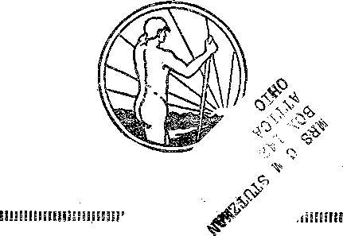
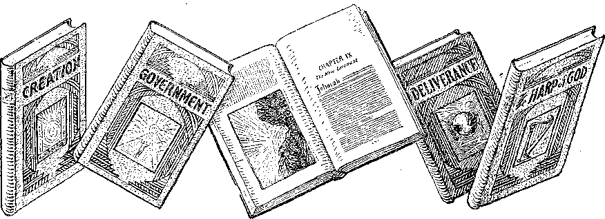

A JOURNAL OF FACT HOPE AND. COURAGE
in this
facts just as they are today
THE KING’S HIGHWAY lecture broadcast by Judge Rutherford
EVERY OTHER WEDNESDAY 5c a copy - $1.00 a year - Canada & Foreign $ 1.50
Contents
............... ====a<^0a_m-=L'LL-....................:...■:---
Labor and Economics
The Miner-Harvester Experiment ............■'>(>’-’
Social and Educational
Twenty Million Chinese Starving ....
Political—Domestic and Foiieicn
’Fourth Degree K. of C. Oath .............3t>
Events in Canada ................ ■
AGRICULTURE AND lIl'SRANIiliY Reforestation in New York .
Home and Health Hints most HEALTH Cl L'i'l 'HE
A De-Aluminum ized Editou ............ .
■ Travel and Miscellany
I’bogbkss in Modern Russia ...
Eeligion and Philosophy “My People I.ove To Have It So’’ .
Seating Capacity 8300 .........
‘•The Posthumous Work of Pastor Russell" ........ 373 The New Archbishop of Canteubury .
The Children's Own Radio Story ............ 383
Published every oilier Wednesday at 117 Adams Street, Brooklyn, N. Y., U. S. A., by ' WOODWORTH, KNORR & MARTIN
Copartners and Proprietors Address: lit Adams Street, Brooklyn, A. Y., U. S. A. CLAYTON J. WOODWORTH .. Editor ROBERT J. MARTIN ■ ■ Business Manager NATHAN n. KNORR .. Secretary and Treasurer
Five Cents a Copy—?1.00 a Year Make Remittances to THE GOLDEN AGE Notice to Subscribers: Wo do not, as a rule, send an acknowledgment of a renewal or a new subscription. A.renewal blank (carrying notice of expiration) is sent with the journal one month before the subscription expires. Changeofaddress, when requested, may be expected to appear on address label within one month.
Foreign Offices
British . s , s , j s 34 Craven Terrace, London, W. 2, England Canadian . . , # . 40 Irwin Avenue, Toronto 5, Ontario, Canada Australasian j » . . 495 Collins Street, Melbourne, Australia South African ..... 0 Lelie Street, Cape Town, South Africa ~
Entered as second-class matter at Brooklyn, N, Y., under the Act of March 3, 1879.
Volume X Brooklyn, N. Y., Wednesday, March 6, 1929 Number 247
This is the first time that the true condition of things in Russia has gone out of that country. Hitherto those who have been to Russia have had their views of what they have seen and heard more or less colored according as their interests were with the workers or with the capitalists. Mr. Young had no ax to grind, and presents the facts just as they are.—Editor.
THE Union of Socialist Soviet Republics [U.S.S.R. (Russian: S.S.S.R.,i.e., Soyus Sotsialisticheskekh Sovietskikh Respublik)] occupies a vast area of 21,200,000 square kilometers, stretching from the Baltic sea and the borders of Poland across Asia to the Pacific ocean and from the frigid shores of the Arctic on the north to the torrid steppes of Turkestan and the borders of Persia on the south.
It is the largest continuous dominion in the world, covering one-sixth of the total surface of the earth; and even among colonial empires the size of its territory is surpassed only by that of the British Empire.
This great country is rich in natural resources. It might almost be termed an undeveloped continent. The forest area is the largest of any nation, covering over 1,350,000,000 acres. The oil resources are capable of supplying one-third of the world’s supply.
The area under cultivate exceeds 250,000,000 acres. Vast stretches are uevoted to the cultivation of wheat, rye and flax, but because of antiquated methods of agriculture and lack of machinery the production is not high. In the subtropical climate of the Crimea, Turkestan, Azerbaijan and Ferghana, grapes, cotton, tea and tobacco grow in abundance.
The coal fields cover a vast area, while the deposits of manganese ores in the Caucasus are the richest in the world. Gold, platinum, silver, mercury, chromium, nickel, zinc, copper, phosphates, etc., add to the natural wealth of the country.
The Soviet Union
The Soviet Union is composed of six allied republics. Within these six republics are ten autonomous divisions and twelve autonomous
territories. These subdivisions are made in order to give the greatest freedom to the respective races and languages of the Union.
The word “soviet” means council. No electoral rights are enjoyed by persons who are employers of labor, or who trade, or who iive on rents. The village and town soviets elect delegates to the district soviets, and the latter.elect delegates to the provincial soviets.
For the central government of the Union, at Moscow, the various provinces elect delegates to the Union Congress of Soviets, which is composed of 1,500 delegates and meets once a year, the session lasting from ten to twelve days. At the close of the congress the delegates surrender their mandates.
The Union Congress is the supreme organ of authority. The actual work of legislation on the basis of the principles laid down by the Union Congress is carried out by the Central Executive Committee of the Union. The Central Executive Committee is invested with the authority of the state and is responsible to the Union Congress, carrying into effect its principles and instructions. .
This executive committee is composed of two bodies, the Union Council and the Council of Nationalities. Every bill must have a majority in each of the two councils before it becomes a law. The Central Executive Committee meets at least three times a year, holding brief sessions. A group of twenty-one members remains in permanent session. They are the highest functionaries of the Soviet Union and represent it before the world.
The Council of the People’s Commissars is composed of the chairman and his deputies and ten commissars who are responsible to the Central Executive Committee for the carrying out 355
Th. qolden aqe
n ’ 356 JI
!| i of the administration of the affairs of the state. I" These commissars include foreign affairs, army and navy, foreign trade, transport, etc. Other administrative councils also operate, carrying ' out the functions of government assigned to I’ them.
The Russia of the Czars
In order to convey to the average reader a ’ knowledge of the conditions which exist in Soviet Russia, one must keep in mind the conditions ' I which prevailed in the old Russian Empire, j which conditions led up to the great revolution ■ i of November, 1917.
! Through successive generations the imperial ; ( dominions of Russia were extended until the
■ czar of all the Russians ruled over the vast
। territory from the Baltic to the Pacific and : ground into submission some two hundred sub' ject races and nationalities numbering over* :1 160,000,000 people; of these 83 percent were j peasants.
; Although serfdom was abolished in 1861, the lot of the peasants had altered but little. In 1914 less than 25 percent owned their own land.
i Illiteracy was general. Over 80,000,000 people could neither read nor write. The Russia of the j czars was the most backward country in Europe.
The peasants usually lived in villages. In the northern districts the peasant’s home was ' usually built of logs; a single room with an earthen floor and a roof thatched with straw (isba). In the south the houses were built of clay and were whitewashed within and without (khata). Infant mortality was the highest of any country in Europe.
For the children of the peasants there were few of the joys of childhood. Forced by the battle fox’ existence, little barefooted children toiled with their parents, old before their years, victims of conditions over which they had no control.
In the industrial centers the hours of labor were long, the pay was small, and the housing conditions were crowded and unsanitary. In the mining districts conditions were worse. The miners and their families lived on the verge of poverty; very often their dwellings were mere hovels.
Jails, noted throughout the world for their severity, were crowded with unfortunate people. There was neither liberty of speech nor freedom of the press. Thousands of people were ban-
Brooklys, N. Y,
ished to the frozen wastes of Siberia, while the clergy and the ruling classes lived in ease and luxury.
Church and State
The Orthodox church (Greek Catholic) was closely allied with the state, and rated with power and intolerance. In politics and educational matters the bishops and the priests exercised great influence. The czar was the “holy father”. In upholding the autocratic decrees and principles of czardom as the ruler by divine right, the church was an arm of the state in which the czar had absolute confidence.
During the great war the clergy were the most active in blessing the cannons and battle-flags of the army. They urged the men into the combat and then profited from their bereaved relatives by the sale of holy candles and in offering masses for the souls of the dead.
From the imperial treasury vast sums flowed annually into the church. Monasteries, convents and church estates were scattered throughout Russia. In Moscow alone there were over nine hundred churches, convents and monasteries.
The World War
In 1914, when the civilized nations began to make war upon each other, Russia suffered more than any other nation. Upon her borders the contending armies, now advancing, now retreating, struggled over a battle-front of nearly 1,000 miles, carrying ruin far into Russia.
Millions of acres of fertile land were turned into a blackened wilderness; thousands of villages were abandoned or destroyed; millions of horses, cattle and sheep disappeared; women and children were scattered and decimated by hunger and disease; old men and women were left homeless and destitute; orphan children wandered over the country; refuges crowded into the cities; whole areas were depopulated; want, hunger and ruin reigned over vast stretches of a once fertile country.
The Fall of Church and State
For three years the great war had raged in fury. The Russian armies, poorly equipped, suffered heavily; millions had been killed or taken prisoners. The people at home were discouraged; their sons were fighting and dying for they knew not what. Food was scarce; the suffering was great.
As the conditions in France produced the great French revolution, so likewise the conditions in Russia gave birth to the Russian revolution. In February of 1917, and further on November 7 of the same year, the people arose like the waves of the sea, and the result was the downfall of the church-state empire of the czars of Russia.
Reconstruction
Because of the wounds inflicted by the World War and the revolution, the work of reconstruction would have been a great task; but now another difficulty was added which greatly complicated matters and intensified the difficulties.
Aided by foreign nations, counter-revolutionists were supplied with money and munitions, and civil vrar was stirred up on the Russian frontiers, north, south, east and west. The result was a tremendous loss of life and material destruction. For instance, the large city of Odessa changed hands in mortal combat no less than thirteen times; a large part of the city was laid in ruins.
All over Russia villages, homes, railroads and factories were destroyed; the loss of life was appalling. It was three years before peace was restored. Then followed the great famine of 1921, one of the worst in history.
In the great Volga valley, in the Crimea, ai . in the wheat lands of the Ukrainian Republic no rain fell for nearly a year, crops withered and vegetation died. The conditions were so severe that the government was feeding over 5,000,000 destitute children. It is since this time that most of the work of reconstruction has been carried forth.
Soviet Economic Policy
In the year 1921 the system of military communism came to an end, and a new economic policy based upon a stable currency and the balance of the budget was introduced. Beginning with November, 1922, large banks and credit associations began to be established. The industries were reorganized upon commercial principles and detached from the state. Cooperatives now handle the major portion of trade and industry.
Private trading and enterprise are carried on too, but the cooperative or trust system is that which is favored by the central government. The trust or cooperative under the Soviet system is the legal holder of property. The cooperatives are organized on the commercial principle of profits. Concessions are granted to foreign capital, which concessions are guaranteed by the state.
Industrial Recovery
The recovery of industry has been for the most part general. For instance, the oil industry has been modernized and expanded. The production is now 20 percent higher than in 1913. The coal output is 24 percent greater than in 1914. Living conditions in both the oil and the coal fields have improved.
In the textile and other industries the advancement has been slow and the scale of wages has almost reached the pre-war level. The expansion and reorganization has been hampered by the lack of money and by the need of new7 and modern machinery as well as of skilled mechanical operators. The result is that production is limited and the price of goods and manufactured articles is generally high compared with the price of similar articles in great commercial nations.
The foreign trade turnover of 1925-26 was 32 percent of the prewvar turnover, and is on the increase. Unemployment in the Soviet Union, as in other countries, is a serious problem; various measures have been adopted to alleviate the condition.
The Peasants .
One of the most serious problems facing the Soviet government is the handling of the peasants and the agricultural situation in general. Various law?s and measures have been adopted, but these have failed to bring about the desired results. All land has been nationalized, but the peasants, as a class, vull not accept nationalization. Much land lies uncultivated. What should be the greatest grain-producing country in the. v7orld is confronted -with a great food shortage; in some districts the food shortage is very acute.
There is also a lack of manufactured goods. In the cities long lines of people "wait in front of the stores, but the supply is inadequate. An economic crisis prevails. '
In the villages manufactured goods are scarce and often entirely lacking, prices are high, and the quality of the goods inferior. Foreign manufactured goods can not be imported. It is the
policy of the government to exclude foreign manufactured goods (except such goods and i machinery as are not manufactured in Russia). ! This is in order to protect the state-aided in-j dustries, which are inadequate, to supply the 1 demand of the populace. If a license to import goods is granted, then the duty is prohibitive, I This lack of goods has produced great unrest amongst the peasant population.
ij
n The Agrarian Situation
J Little advancement seems to have been made i; in handling the agrarian situation. As only 17 : percent of the population may be classed as ur-: ban, the success of the Soviet system depends ! not so much upon their city workers as upon the millions who till the soil. So far no equitable and constructive policy of agrarian advancement has been introduced, and as a result an economic crisis exists of the utmost gravity.
The acreage under cultivation is decreasing; much land is reverting to forest. In 1928 over five million acres less land was under crop than in 1927.
Because of the number of horses killed during war and internal strife there is not sufficient to till the soil properly. The production of tractors is slow, consequently the yield per acre is decreasing.
The Communist peasants receive favors and concessions. They are allotted the best machinery and buildings. Their taxes are moderate. In the schools their children are given special privileges. As a whole, the cooperative system of farming has not been successful, largely because of the lack of equitable individual effort on the part of each, member of the community.
The non-eommunist peasants are taxed to the utmost limit and otherwise penalized. Their children are at a disadvantage, especially in the higher schools. In 1927 such a climax of dissatisfaction was reached that the government closed the private grain purchasing agencies, and grain gathering was conducted by military force. The revenue dropped off over $100,000, 000, and nearly 150,000 tons of grain had to be imported. The total number of the Communist party is only 1,370,000 members; while the young Communists total about 2,000,000. This minority directs the policy of Russia’s 140,000, 000. The peasants, as a class, are the most poorly-clad people in Europe.
The Prison System
The prison system has been reorganized; the death penalty (except in rare cases) has been abolished. Ten years is the maximum sentence. Minor offenders are given considerable freedom and receive industrial and educational instruction; and if engaged in prison work, they receive pay, a portion of which is retained until the expiration of the prison term. This is very beneficial. Political prisoners do not fare so well: Siberia is still used; so is banishment, to the dreaded Solovetsky prison settlement in the frozen wastes of the White Sea.
Transportation
During the World War and the three years of civil Avar, over 5,000 miles of railway track and 3,672 bridges and culverts were destroyed. Sixty-five percent of the locomotives and the large majority of the freight cars were unfit for service. This damage has been repaired. The lines have been reballasted and put in running order.
At present a new line is under construction which will cross a territory as large as France. It will connect the cotton belt of Turkestan with the wheat area of Siberia.
Automobiles in Russia are few in number: the roads and highways are probably the poorest in Europe. An effort is now under way to improve the main roads.
At Rostov on Don a factory for the manufacture of agricultural machinery is in the course of erection. It will cover 260 acres, and to complete the undertaking will require five years.
Electrical construction is being given special attention. In the Donetz basin the largest electrical development in Europe is under construction.
Educational Advancement
Special attention is being directed to educational matters and there is a general call for knowledge and for western science and mechanical methods. Schools are being provided as rapidly as the economic conditions will permit. The system of education is based upon the principles of evolution, atheism and communism. An elementary knowledge of military training is also imparted.
At the present time over ten million children are attending the elementary schools. This is three million more than in 1914. Nevertheless the existing schools and teaching staffs are not adequate for the population. Technical schools provide training for nearly 600,000 students. One hundred and thirty-six universities, besides a number of scientific and research institutes, foster higher education.
During the past four years approximately 4,000,000 men and 3,000,000 women have been taught to read and write. During the czar’s rule 87 percent of the women were illiterate. There are 25,579 circulating libraries in operation. The Russian alphabet has been modernized. In large sections of the country where the complicated Arabic alphabet was in general use the Latin alphabet has now been adopted.
The old Julian calendar has been abandoned and the modern Gregorian calendar of the western nations adopted. In the education of the people moving pictures are being employed to advantage. The films with love-making, hugging, killing and shooting scenes are not encouraged.
Films dealing with educational, industrial, historical, geographical and cultural knowledge are given preference. Permanent cinemas to the number of 4,839 have been established in the rural districts, and 1,500 itinerant shows are also in operation. In 1913 there were 12,380 post offices; now there are some 32,870.
Social Conditions
The protection of motherhood is being given special attention. Maternity homes, clinics, and medical and advisory stations have been established in the principal centers. Their services are free. In the cities, playgrounds and recreation parks have been established for the children. In Moscow there is a playground for 30,000 children, with nurses and games and exercises for the smaller children. Athletics are being specially encouraged. In the industrial centers numerous clubs and libraries have been established.
Marriage is looked upon as a contract of mutual cooperation, and when that cooperation is not mutual either party may obtain a divorce. In Moscow, in the year 1926 there were 24,705 marriages and 5,461 divorces. In the obtaining of a divorce either side may apply to the divorce court. The legal facts are noted by the official in charge, and the divorce is granted forthwith. If there are children, then the authorities see to it that the parents support the children until they become of age. According to the Soviet law, marriage is legal only by civil register. In 1926 only 23.3 percent of the marriages were registered with the church.
Censorship
All publications, newspapers, books, magazines, etc., are subject to strict censorship. No books or booklets of any kind may be printed without the permission of the censorship bureau. Likewise, books can not be imported. They must first be submitted to the censorship bureau, and a license obtained granting the right to import into the Soviet Union. Bibles, however, if without notes or comments, may be imported. Meetings and lectures can not be held without permission.
Evolution and Atheism
Theoretically, the Soviet law grants religious freedom throughout the Union; but, whether by government consent or because of over-zealous officials ignoring the law, these principles are n always put in operation. Children under sixteen years of age can not receive any religious instruction except from their parents in their own homes. Public religious instruction of children is not permitted.
The doctrine of evolution is fully exalted in the Soviet Union. The government is openly atheist and looks with disfavor upon any other teaching. In the schools and educational centers the children are being taught accordingly. The liberty of the press of the western nations has not been realized in the Soviet Union. An anti-religious university was recently opened in Moscow.
The Orthodox (Greek Catholic) church has been completely disestablished. The church edifices have been taken over as national property. These buildings may be used, provided they are kept in repair. Many churches are in operation all over Russia, but the church-and-state glory and power of the past is entirely absent.
Creedal Theology and Tradition Responsible
For centuries the Greek Catholic system, with the czar as the “holy father”, and its bishops, priests, monks, nuns, convents and monasteries, fastened itself upon the people. It claimed the sole right to teach God’s Word and that it was a true manifestation of His holy principles, doctrines and precepts. It persecuted all that differed from it.
The unscriptural, God-dishonoring doctrine that before God created man He created a hell of torment in which it was His purpose to torture millions of mankind in undying agony, and that He also prepared a purgatory of suffering from which escape might be hastened by the payment of money to the priests for the offering of masses, etc., has nauseated many thinking people. These doctrines, together with the commercial religious practices of ecclesiasti-cism and its interference in politics and educational matters, have created a strong feeling of repulsion.
It is a great pity that the peoples of the earth are so little acquainted with the true knowledge of God’s Word and of His gracious plans and purposes for the blessing of all mankind. If the nations of the earth would accept His Word as their only guide, then wars and hatred and strife would cease, and peace and true brotherhood would fill the earth.
The God-defaming teachings of ecclesiasti-cism have mistakenly been accepted as the true representation of the plans and purposes of the all-wise and merciful Creator. The result is the present trend toward evolution and atheism. As individuals, the people of Russia are generous and sympathetic, and when the true knowledge of Jehovah’s love is manifested they will rejoice in His loving provision which through the establishment of Messiah’s kingdom will bring blessings to both the living and the dead.
Jfoscoic
■ Moscow is a distinctive city, occidental yet oriental, but decidedly Russian. Caucasearis, Circassians, Jews, Tartars, Georgians, Mongolians and representatives of Asiatic and Oriental races combine to form the 2,000,000 inhabitants of the once “holy” city of Moscow.
On a forty-metre-high terraced hill, overlooking the Moskva River, rises the fortress of the Kremlin. The -walls of this triangular enclosure are studded with nineteen imposing towers. The present battle-scarred, weather-beaten walls with towers and secret passages were erected by Ivan III, in 1485-95. Within this enclosure stand towering golden-domed churches, palaces of czars and patriarchs, toAvers, armories and state buildings, grouped in semi-oriental style and replete vuth the history of centuries of Muscovite power.
Here is located the famous “Tsar Kolokol”, the largest bell in the-world, eight metres high and Aveighing 201,924 kilograms. Over the toAv-ers of the Kremlin rise the golden two-headed eagles, symbol of imperial Russia. All such symbols and monuments of the czars and of Avar have been removed throughout Russia; but for historic and archeolgical reasons the Kremlin is unchanged, except for the removal of the great monuments of the czars.
Outside of the Spasski Gate (“Gate of the Redeemer”), Avhich towers 190 feetin height, lies the Red Square, half a mile long and 500 feet wide, the review ground of Moscow. Immediately under the Kremlin Avail, facing the square, is a small cemetery called “The Brothers’ Graves”, for those Avho fell in the revolution. The Lenin Mausoleum is also located here. From the dome of the state building immediately within the Kremlin Avail, the red flag of the Soviet Union flies day and night. '
At the south end of the square is the extraordinary cathedral Kram Vasiliya Blazhenno-vo. The style of architecture is unknOAvn outside of Russia; the roof is a series of nine spiral domes and bell towers, all different and in variegated colors. It was built by Ivan the Terrible, and is hoav a museum.
On the east of the square rises the colossal commercial arcades, built (1888-94) of stone and containing over 1,000 stores. Here is also located the grim circular stone platform and enclosure called the “Skull Place”, used for hundreds of years as a place Of execution.
At the north end of the square is the Iberian Gate, with imposing towers 150 feet high. Here is located the Iberian Chapel, once considered the holiest place in Russia. Here is the Statue of the Virgin Mary (the Iberian statue). Priests in vestments, Avith an abundance of candles and holy Avater, minister to those Avho still have some faith in the poAver of priestcraft.
On the left, directly opposite this chapel, is the second house of the Moscoav Soviet, On the Avail facing the chapel a large sacred image once stood. This image has been removed, and the inscription, “'Religion is opium for the people,” iioav stands out in bold letters.
At some distance from the Kremlin lies the Avail of the Kitai-Gorod. This Avail Avas erected
to keep back the Tartar hordes who once pressed the Muscovite rulers. - .
For the most part the streets and avenues are wide. Some avenues have parkways and esplanades lined with trees and flowers. Moscow is really a fine city. The city is paved mostly with the old-fashioned cobblestones; a few streets are asphalted. For years the city was neglected, but now the damage of the revolution has been repaired and the appearance is almost normal.
The telephone and street car service is modern and very good. A large number of modern flats have been erected; also a fine post office; but the housing conditions are entirely inadequate for the people crowding into the city.
The rooms are parceled out according to the size of the family. In some quarters numbers of people live in single rooms. In these districts are much want and suffering, poor people underfed and scantily clad. Many beggars, comprising men, women and children, depend upon the passer-by.
Man may do his best to right conditions and may institute new laws and regulations, yet no power but that of the Creator can bring the true desire of mankind, the desire for life and peace and communion with his Maker.
Jehovah the True Deliverer
Even were it possible for the highest aims of ' earthly governments, whether republican, mo-narchial, socialistic or soviet, to be realized, yet , death reigns over all. In a few years poor feeble man (no matter how great he may think him- ; self or may appear in the eyes of his fellows) withers like the grass of the field, and, like a helpless worm, sinks into death.
But when God’s kingdom is fully operative in the earth, then, as man serves and obeys His righteous law, not only will he be blessed with endless joy and the blessings of eternal life in full harmony with the Creator, but the earth itself will become a land of plenty like the paradise of God. Nothing will mar the blessings of peace and true brofi "hood under the invisible power of Christ, the _^deemer.
The time is rapidly approaching when the visible power of God Almighty will be manifest against all oppression and hypocrisy and the God-dishonoring doctrines taught in the name of the Creator. The time limit of the day of evil is rapidly approaching, when in Armageddon the power of the Creator will be manifested and the truth made known. Then “all nations shall call him blessed”.
Straws in the Wind
Reforestation in New York
NEW YORK STATE is pressing for the reforestration of her slopes and ridges that are not suitable for farm work. It is claimed that for an initial cost of $2 one thousand two-year-old seedlings may be purchased from the State Conservation Department, and that in fifty years these will produce $500 w’orth of lumber to an acre.
Russia Seeks American Tourists
EPORTS from Russia are that first class one-hundred-room hotels with baths are to be built in all principal Russian cities, all frontiers are to be thrown open, railway trains and stations are to be kept clean, new uniforms will be provided, and that it is hoped that these inducements will bring in to Russia many of the dollars of American travelers now left outside.
No Third Degree in England
T N ENGLAND the police are not permitted -*■ to cross-examine a prisoner. In this country, in several instances, prisoners have been killed by police while undergoing the third degree. In Pennsylvania an aged Czech who had had one examination by the police, and who came home partially paralyzed, when notified that he was wanted for another grilling committed suicide.
Fourth Degree K. of C. Oath
THOSE who circulate the supposed fourth degree K. of C. oath should also explain that it was published in the Congressional Record by the request of a Catholic, and that the committee which, upon his request, investigated the oath, found that it was not true. We have many times been requested to publish this oath, but have always refused to 'do so.
State Religion in Serbia
STATE religion in Serbia is on the down grade. There are only four churches in Belgrade, a city of 500,000 persons, and this is three more than are necessary. The bulk of the people have forsaken religion entirely.
The Great Kulik Meteor in Siberia
INVESTIGATING a story which filtered in from a savage tribe in northern Siberia, Professor Leonide Kulik, Russian geologist, has found parts of a vast meteor which recently fell in that region, completely devastating it of all life for an area of one hundred square miles. The meteor fell ten years ago and was located only this past summer. It contains iron worth $1,000,000.
The Grand Duke Alexander -
THE Grand Dulce Alexander of Russia is accredited with having recently said: “While I write and work I forget completely my personal self and its interests. I try, according to my strength, to follow the example of Christ. One single desire guides me, namely, to be the willing instrument of the will of Christ.” The Grand Duke was at one time an admiral in the Russian navy. He is a cousin of the late czar.
Czar’s Relatives Find It a Hard World
THE czar’s relatives are finding it a hard world. The former commander of the czar’s bodyguard is manager of the stable of a Chicago chain store owner. His wife, the grand duchess Olga, lives in a six-room house, and helps out the family income by painting pictures. The former master of ceremonies and the lady in waiting to the former empress are running a boarding-house in Copenhagen.
Twenty Million Chinese Starving
IT IS claimed that there are now twelve million starving Chinese and that before spring the number will be at least twenty million. It is known that the gems recently taken from the tomb of one of the old empresses of China would be more than sufficient in value to provide for this vast number of people for the entire winter. The tomb was rifled by soldiers and military officers. Only about $4,000,000 of the gems have been recovered, and these were a mere bagatelle as compared with the total.
Motoring Across Europe
A CANADIAN woman and her American sister have just finished a trip across the length of Europe in an automobile. They went from Spain to near Constantinople and returned, with no molestation.
London Insane over Spiritism
T ONDON continues insane over spiritism. 'A doctor who is a spiritist has tried sending radio messages to Mars. He claims to have made several trips there. He does not know that .it was all in his head. A London lad of seventeen who had lost his mother and subsequently dabbled in spiritism sought relief from the tyranny of the evil spirits by committing suicide. ' '
The Miner-Harvester Experiment
OF THE 8,000 miners who went to Canada to participate in last year’s wheat harvest it is encouraging to note that all but 500 were able to stand the gruelling experience of working from dawn to sunset at a kind of work to which they were unaccustomed. The 500 were returned to Britain, but the others are remaining and will no doubt become permanent residents of Canada.
Where the Money Goes
OF THE government’s expenses for 1927, 31.8 percent went for military expenditures and 51.1 percent for public debt, which was also military expenditures. That makes a total of 82.9 percent of the government’s receipts spent for wars, past, present or future. That leaves 17.1 percent for all the other interests of the people, showing that war is the most absolute foolishness conceivable.
South America the Coming Continent
SOUTH AMERICA may well be termed
“The Coming Continent”. The United States now has as much money invested in Venezuela alone as in the entire continent sixteen years ago. The grand total of American investments in Spanish America is approximately five billion dollars. South America is taking a great interest in aeronautics, with Peru in the lead. The chief use for airplanes in Peru is for cotton dusting, where planes costing half a million dollars are in use for that purpose.
African Languages and Dialects Russian Cloth Sold in India
THERE are 843 known languages and dia- TJRITISH textile industries have shown some lects in Africa, 500 of which have never alarm over the fact that four hundred been reduced to writing. Mohammedanism is packages of Russian fabrics have been sold in spreading throughout the length and breadth of India at ten percent less than is paid for Brit-tiie Dark Continent. ish fabrics of the same quality.
Wayward Polish Husbands
rpEN thousand Polish women and their children are said to be in Poland seeking husbands who left them to come to the United States to seek their fortunes. It seems that many of these men, after arrival here, changed their names, married other wives, and forgot to notify the folks at home.
Raising Fishballs off Maine
FF Lubec, Maine, a fisherman threw overboard several refuse potatoes, and some codfish, on the watch for something to eat, gobbled them up. Another fisherman found the codfish with the potatoes inside them and, according to the New York World, is trying to figure out whether a new style of ready-made fishball can now be raised by the method indicated.
The Frost Ash of Rockaway Beach
ONCE a year millions of frostfish cast themselves up on the beach at Rockaway and commit suicide. The time chosen is the first frost of winter, under the light of the moon. The same phenomenon is observed in New Zealand. Why these fish choose this time and method of putting an end to their lives is unknown, The official name of the frostfish is Lepidopus Cauclatus, but it is' otherwise called the scabbard and the tomcod.
Chicago’s School Children
STUDY of Chicago’s school children shows that 85 percent have physical defects. Of these, 86,000 had defects of palate and teeth, 25,000 had defective vision, 13,000 had enlarged thyroid glands, 10,000 were anemic, 10,000 had enlarged lymphatic glands, 6,000 had pulmonary diseases, 4,000 had skin diseases, and from 1.000 to 2,000 were listed in each of the following: nervous diseases, heart disease, ■ rickets, bone and joint defects, defects of speech, and defects of hearing. The Red Cross estimates that 70 percent of the school children of New York County are defectives.
Making History for Persia
THE first Persian woman to discard the veil, and the first woman to leave Persia Oi n individual passport, is now giving lectures .u this country. In starting for America she flew from Irak to Teheran in five hours, a trip which required forty days by automobile only five years ago.
Crookedness in Massachusetts
T N PROVING, as it has done, that Vanzetti could not have been present at the Bridgewater holdup, The Outlook discovered that the noble State of Massachusetts had either lost or destroyed its copy of the Vanzetti case, and it had to get its copy elsewhere; which is pretty good evidence that somebody in Massachusetts is trying hard to cover up one of the dirtiest records ever made in history. Massachusetts illegally murdered Sacco and Vanzetti.
Peasant Rule in Rumania
ulius JHaxiu, head of the new peasant government. of Rumania, begins his premiership well by putting an end to anti-Semitic riots. The parties who have been controlling the country are doing- everything possible to create unemployment and unrest, but Manin is going ahead with reforms, taking the America of Lincoln’s day as his model. He believes in a real rule of the people, by the people and for the people.
What Are We to Think?
everend Bertram Smith, president of the
British Congregational Union, in an address to the union recently said: “What are we to think of a society in which the most essential services are scarcely rewarded with a living wage, and the greatest fortunes are won by the most idle and most useless members: a society in which the honest, industrious man can toil all his life at work socially essential, for a wage on which he and his family can scarcely live, and in which a worthless speculator can amass an enormous fortune in a few years?”
Disappearance of Jobs
CCORDING to the statistics of the United
States Bureau of Labor, about one and a quarter million jobs have disappeared from the factories of the United States in the last five years. Labor-saving machinery is now actually saving the labor for which it was built.
Hemp in Western Canada
ANADA is adding the production of hemp to her agricultural industries, and with every prospect of making a success of it. Seven hundred acres were sown to hemp near Portage la Prairie in 1927, twice the acreage is reported for 1928, and a material increase is expected for the next year. The manager of the hemp plant at Portage la Prairie claims that farmers can make more by growing hemp than by growing wheat and that the market is not as erratic.
Teaching Communism to Children
THE London Times, referring to the existing scarcity of food in Russia, declares that in a certain school for orphans, near Batum, several hundred children were kept without food two and a half days, being told meantime to pray to God for relief from starvation. When famished they were then told to pray to Lenin, and the food was promptly forthcoming. We do not vouch for the truthfulness of this report; but it may be true, and probably is.
Too Much Ice Cream Causes Death
YOUNG Russian miner won an ice cream eating contest, devouring twenty plates of it in half an hour. This proved too great a shock to his system and in a few hours he died from pneumonia.'
Happenings in Hungary
UNGARIAN students have been on another wild anti-Semitic spree, partly under government protection. Those who resisted them were fined $40 and given fifteen days in jail. The students also were fined $2 each. Hungary expects shortly to put one of the Hapsburgs back on the throne.
War and Peace
IN THE Dutch magazine Kerk en Verde, published at Ammerstol, Holland, December, 1927, the Reverend J. B. Th. Hugenholtz said: “It is not the General Staff, nor the ministers of war, not the big guns, nor death-dealing airplanes, that should be blamed for the wars, but, rather, the clergymen of all denominations, whose eyes are blinded and whose consciences are hardened. Indeed, in a good many places, holy support is outwardly given to militarism: but everywhere, with but few exceptions, the clergymen are the main standby of militarism, whether these clergymen know it, don’t know it, or just don’t want to know it.”
Events in Canada By Our Canadian Correspondent
THE farmer carries the load! That Canada, in common with the rest of the world, is burdened down with taxation to the breaking point, and that the farmer in. particular is carrying the burden, is reflected in no uncertain way in an article entitled “Township Taxation”, by W. L. Smith, a former editor of The Farmers’ Sun, The article reads :
- Of all the subjects that will come up for consideration at the next annual convention of the United Farmers of Ontario, there is none of such immediate importance as that of township taxation.
If you do not believe that, read this:
“In 1906 the total township taxation in Ontario, for all purposes, was a little over six and a quarter million dollars. In 192G, the latest year for which official figures are available, the total was upwards of twenty-seven and a quarter millions.”
If still in doubt, read this further statement:
“The increased taxation in 1926 was levied on a population practically identical in number with that of 1906, the rural population in 1926 being 1,078,956, against 1,052,844 in 1906, an increase of approximately 26,000 in the twenty years.”
Read further:
“'Assessed values of rural property in all Ontario, in round, figures, increased only from 588 million dollars in 1906, to 781 millions in 1926, an increase of 193 millions.” ■
The reader can figure out for himself how much the rate on the dollar must have grown to produce twenty-seven and a quarter millions in taxes from an assessment of 781 millions in 1926, against six and a quarter millions in taxes from an assessment of 588 millions in 1906.
The disparity between taxation and population in 1926 and 1906, and in assessed values as compared with taxation between 1926 and 1906, is continued when earning power in the two periods is taken into account.
The earning power of an Ontario farm can be fairly well measured, at least for the purpose of comparing one year with another, by taking the money value of the crop produced.
Accepting that as a basis, it is found that the money value of all field crops produced in Ontario in 1906, as given in an official report issued by the Ontario government, was 144 million dollars. The same official report places the value of all field crops produced in 1926, at 257 millions, round figures again being used in both cases.
Now how does all this work out?
Roughly, for every hundred dollars’ worth of crop produced on Ontario farms in 1906, one hundred and eighty dollars was produced in 1926. an increase of eighty per cent. For every dollar in assessed values in 1906, there was one dollar and thirty-five cents in 1926, an increase of thirty-five per cent. Population in 1926 was, as already stated, practically the same as it was twenty years before.
But meantime the total of rural taxation in Ontario had jumped from six and a quarter to twentyseven and a quarter million dollars, an increase of between four and five hundred percent.
How long can this enormous growth in taxation as compared with population, assessed values, and earning power in rural Ontario continue without complete rural bankruptcy?
That is, perhaps, enough to digest at one sitting.
Canada Looms Large on the Horizon
It is interesting to note that among the nations of the Avorld Canada stands:
First in wheat exports, nickel, asbestos and newsprint production and in power development, per capita railway mileage and fisheries.
Second in number of phones in use, production of autos, coal resources, per capita exports and total railway mileage.
Third in silver, gold and aluminum production, forest resources and area.
Fifth in foreign trade and in zine production.
Sixth in production of lead and pig iron.
Seventh in production of steel.
Preachers Becoming Honest (?)
For once a preacher tells the truth. An article appearing in the Saskatoon Star-Phoenix tells the following:
Outspoken criticism of the part played by the Christian Church in time of war was voiced by Rev. M. G. Melvin, pastor of Knox United Church, in an answer on “Peace” Sunday afternoon before the Regina Peoples’ Forum in the city hall.
“The church lines itself up with the state, whoops up war and makes the pulpits very recruiting stations,” charged Mr. Melvin, adding the criticism that in the war of the past, the church had invariably sided with the state in military projects, bent on slaying fellowmen, when the church was pledged to the brotherhood of man and to the principles of peace.
“When a righteous war is pre aimed the church baptizes it,” the speaker deck I. in speaking of the propaganda which is handed out in time of war. “The ostensible cause is not the real cause, so an atmosphere of righteousness is created, high sounding words are invented in order to keep up the morale of the warring nation,’ ’ Mr. Melvin said.
“Once war is started, people are fed on falsehood, such as the atrocities stories in the last war. ’ ’
The Flow of Immigration
The flow of immigration, checked by the World War, is once again turned into Canada. The official report states:
Immigration to Canada for the period April to September, 1928, inclusive, amounted to 123,713, compared with 109,025 for the corresponding period of a year ago, according to an official statement here today by the department of immigration and colonization. The ratio of increase is 13 per cent.
For September immigration to Canada amounted to 11,663, compared with 9,061 in September a year ago. By its major classifications, September immigration this year consisted of 4,434 British, 2,739 from United States, and 4,490 from all other countries.
According to occupation, immigrants for the half-yearly period have included 77,440 of the farming class: 5,133 laboring; 6,677 mechanics; 4,038 trading; 663 mining; 11,366 female domestic servants, and 18,396 of all other classes.
Canadians who had gone to the United States intending to remain there permanently and who returned to Canada during September, declaring their intention of remaining permanently in Canada, numbered 3,184. The total of such returning Canadians in the six months’ period is 20,852.
Caribou on the Move
The caribou are on the move too ’ The Family Herald reports:
Many thousands of caribou, travelling in the long, relentless treks which have come to inspire northern bushmen and trappers with fear, are on their journey over miles of muskeg swamp, prairie and treeless barren lands to the south..
Their migration, is a menace to the little settlements on the frontier of civilization in the North country. The avalanche of huge beasts, approaching in that force which knows no resistance, is moving upon villages far south of the latitude at which the caribou usually stop to winter. Miles long are some of the files of the great beasts.
On and on the “trotting death” is advancing. Preparations for the huge antlered animals are being made in the little settlements. Barricades are being set up—fire lines are being established in efforts to stay the onrush of pounding hoofs which mean disaster. The hunting season for caribou opens in Canada November 15. Many Americans have already arrived in the North country in preparation for the opening of the hunting season. Sportsmen will hunt for enjoyment, but inhabitants of the country will hunt to protect their homes from the caribou.
Canadian Radio Situation
The refusal of the government to renew the radio licenses of the I. B. S. A. has resulted in much embarrassment to the prime minister and his colleagues. The government stated that the reason for its action was that the public objected to the programs of the Bible Students. In point of fact, the clergy objected because they could not withstand the truth. The people heard the message gladly and expressed their indignation by a monster petition of some 500,000 names, among which were represented 40 percent of the radio owners. The government, finding itself in an awkward position, has appointed a Radio Commission to investigate the whole radio situation in Canada and bring in a report.
Speaking editorially in regard to the Commission and its work the Saskatoon Star-
Phoenix, under the caption, "Canada’s Radio Policy,” says:
A federal commission is to be named this week to study radio control in Canada. This country is now involved in a discussion with its neighbor' about the allocation of radio wave lengths, the United States claiming 74 to Canada’s six. This is a matter for international negotiation. All that the commission must study is how to make the best possible use of the wave lengths available in Canada whether they be six oi’ more.
At the present time broadcasting in Canada is entirely in private hands, although under government regulation. The department of marine and fisheries has the responsibility of licensing or refusing to license any proposed broadcasting station. It maintains a staff of inspectors and other officers whose work is to prevent chaos in the air, to eliminate interference and to improve reception. A liberal licensing policy has been pursued. Canadians hear from radio stations in the Dominion music of many varieties and argument on both sides of public questions. Only one controversial question has arisen affecting the radio branch at Ottawa. This was when it refused a license to the International Bible Students, against whose programs many protests had been received. It was rather with a view to suiting the public taste than establishing a censorship of religious opinions that the department withheld a permit from the Bible Students. The general policy has been to let the public have what it wants in the way of radio entertainment, the government concerning itself chiefly with the mechanical side of the question. The position in Canada is thus the same as in the United States where a federal commission has the function of distributing wave lengths among the various stations. For a time there was no regulation of radio in the United States, but the federal government had to step in to prevent a state of anarchy in the air.
SUNDAY, November 11, at Waltham Abbey
Church, London, Rev. W. C. Proctor, a special speaker for the Armistice Day program (or "Remembrance Day services”, as they are called in Britain), endeavoring to be faithful to the Bible and to the God of the Bible, argued that the sacrifices of the men in the trenches during the World War could not be compared with the supreme sacrifice of our Lord.
He went on to say that Christ gave his life for his enemies, while these have given their lives for their friends and country and their king. Then he backed this up by saying that while it was true that Christians (1) had gone to the Avar, it should be remembered that two-thirds of them were conscripts and that some of them were criminals.
As a reward for this courageous and faithful kind of preaching, the regular preacher of the church gave him a good laying-out, and others reproached him for his courage in telling the truth. We have this information from the London Chronicle, issue of November 13, 1928, under the heading, “Churchgoers Angered on Armistice Day. Curate Protests.”
BIBLE Students in New 'Jersey are waging a vigorous campaign against the Devil, and the Devil does not seem to like it, not a little bit. On Sunday, December 30, 1928, the police of Englewood (the chief is a Knight of Columbus) arrested twenty of a party of about one hundred who were witnessing the “'gospel of the kingdom” from door to door.
Patrolman Corrigan drew a billy on I. Newman, of Paterson, and threatened viciously to break his head. This was after his prisoner had been placed in a cell for exercising his Constitutional prerogative of preaching the gospel in the way that seems to him best. When his prisoner explained his mission Corrigan interrupted him to say, “Jehovah? We don’t want any Jehovah God around here”; which is doubtless true.
Mrs. Theresa Smith, also of Paterson, showed her spunk. She had a sale almost made when a plain clothes man arrested her and took her to the station-house. After her release she called again on her prospective customer and succeeded in completing her sale, and a friend, Hazel Hessler, delivered the books. She found that her customer had in the meantime protested to the police against their intrusion into her affairs. Probably the police were all reading the 'Sunday papers at the time she telephoned.
Mrs. Elizabeth Pau was stopped as she was leaving a home, was asked where she lived, and when told that she was from Paterson, the plain clothes man who afterward arrested her asked what she was doing. She replied, “Preaching the gospel”; and he replied, “We have enough people up here to preach the gospel and do not need you to come and tell it to us.” It is probably true that they do have too many preachers in Englewood. There will be fewer later, when the Bible Students get through with their work.
The hearing of the Bible Students was set down for the following Friday night, but at their request was postponed for two weeks. In the meantime the town was covered again with literature inviting Englewood residents to listen in to WBBR at 11 o’clock Sunday morning, January 6, when an explanation would be made as to why the arrests had taken place. A full statement of the facts was given over the radio as to why all classes of so-called “religionists” are opposed to the message of present truth.
When the hearing was finally held on Wednesday, January 23, all but two of the defendants •were dismissed. These two, Isaac Newman and Charles Nicita, were fined $10 each. The fines were paid under protest and preparation made to appeal the case. It appeared at the trial that, the arrests started with the arrest of Newman when he called at the hoim of patrolman Bernard Corrigan. This showt, the great advantage of having all your “cops” of one nationality and one religion.
South Amboy Again.
Our readers will remember that last June there was a similar wholesale arrest of sixty-one Bible Students at South Amboy. When the case came to trial the city was hopelessly beaten and the recorder judge asked for time to meditate over and carefully consider the evidence before giving a decision.
On Sunday, January 20, 1929, he was still meditating over the case of last June, and, despite that fact, fresh arrests, of almost the same number of Bible Students, were made in South Amboy on January 20. When brought before the recorder, he publicly admitted that they had been unlawfully arrested, and dismissed them all. '
On this Sunday two of the gentlemen who, with their companions, had engaged in giving to the people at their homes, without charge, copies of Judge Rutherford’s address entitled The Peoples Friend, were suddenly attacked by a gang of ruffians. Both of them were summarily ordered out of town, slapped, punched, kicked and vigorously man-handled.
An item in the Perth Amboy Evening News, of January 22, said:
When interviewed last night, the Recorder stated that no city ordinance on record provided for the arrest or punishment of this particular offense. In reply to the question as to what authority existed for their arrest, the Recorder stated that so far as he knew there was no authority for either the arrests in June of last year, or on the present occasion, intimating that the police had acted unadvisedly. These revelations awaken an interest in the minds of the thoughtful citizens of South Amboy, and they are asking, “How comes this?” “Why this confusion?” Have we an unintelligent legal organization acting haphazard, or where does the trouble rest?
Commenting on the South Amboy situation, T. J. Sullivan, who expressed himself very freely in an address broadcast by Station WBBR, on this same question, said:
It is true that in June, 1928, the Bible Students were arrested (without any just cause or excuse), and were tried. The justice of the peace sitting on the case requested that both parties submit briefs, which was done. Repeatedly the lawyer for the Bible Students requested the Judge for a decision during the six months that followed, without avail. Even a few days prior to the broadcast above mentioned he had advice from the judge that he had not arrived at a decision. If it can be consistently maintained that "prompt hearing and duly dismissed” means that it takes six months to find out that there was no authority for the arrests made, that is the prompt consideration received by the Bible Students. I want to say, however, that until the hearing of Sunday, January 20, the Bible Students had no intimation that the case was dismissed, and very evidently the police officials of South Amboy were also in ignorance of it; otherwise they would hardly place themselves in the ridiculous position of arresting law-abiding citizens for preaching the gospel when they had no law under which they- could hold them, and for a considerable time stand by while misguided children destroyed the property of the Bible Students.
I am accused through the press of making "false expressions and unfounded charges of improper political influence against the city officials of South Amboy”. I submit that if arresting sixty men and women for preaching the gospel of Christ’s Kingdom, refusing to render a decision on their case for over six months, then coming out and saying their case was dismissed, without even advising them or their attorney, and then having a number of Christian men and women arrested six months after the first case was tried, many of these latter being arrested before they had even called upon a solitary individual about the kingdom of God, arrested because they were Bible Students; and further, if the stoning of law-abiding Christians and damaging their property while they drive their cars through the streets of South Amboy, advertising a free public lecture on the Bible, is not unusual for South Amboy, then I was wrong. If the stoning of Christian women on the streets of South Amboy because they dared to preach the gospel of Christ’s Kingdom as He commands them to do is not considered extraordinary by its citizens, then, of course, I was wrong. And in each case the culprits who broke the law and threatened the life and property of these Christian men and women were permitted by officers to go free, while the Christians were arrested.
The International Bible Students Association is an organization of Christian people, who have consecrated and devoted themselves to the service of God. They exercise and practise pure and undefiled religion as set forth in the Bible, which is the Word of God. The exercise by them of that religious faith as set forth in the Bible is not for selfish purposes. It is to glorify God and to do good to humanity. They do not seek to make money out of the practise of religion. They follow some honorable employment or avocation to provide the things decent and honest in the sight of God and man for themselves and their families. The exercise of their religion in serving God is a divinely given privilege and duty, as each one so believes. Each one who is devoted to God and to His cause of righteousness takes advantage of such opportunities as he may have to tell others about the gracious plan of God for the blessing of the people. The organization known as the International Bible Students Association is charitable, benevolent and beneficial, because seeking only the good of ethers in the name of the Lord.
In America and in many other countries of the world, Sunday is the day set aside and intended to be devoted to the service of God. The method of exercising their religious belief and freedom on Sunday and other days, as adopted and used by the Bible Students, is in the following manner, to wit: When possible on week-days, and on Sunday mornings as a rule, these Christian Bible Students carry with them books and booklets containing printed sermons or discourses which explain and give instruction on the Bible. If there are several persons in the same neighborhood who are interested in the study of the Bible, the one calling with the books will arrange a meeting in some home and Show those who attend how to adopt a systematic study of the Bible. The entire work is for the benefit of the people. There is no attempt to induce any one to join any organization. Whether the persons called upon are Catholic or Protestant, Jew or Gentile, it is the pleasure of the Bible Students to aid them all to understand the Bible. No one of the Bible Students is engaged in the selling of books as a business and for the purpose of making a livelihood out of the same. Were it not for the opportunity of thus exercising the religious freedom in teaching the people concerning God’s plan, they would not for one moment engage in it.
I want to say that I have no desire to unduly criticize the people or officials of South Amboy; but, when the Constitutional rights of the people are being taken away, and when officials, appointed by the people to enforce the law and protect the interests of law-abiding citizens, use their office and power to intimidate and abuse law-abiding Christians while they permit the law-breakers to go free, it is time the people knew about it, particularly so when the work they are opposing is the declaration of the establishment of the kingdom of God, which the Lord commands shall be preached unto all the world as a witness unto all nations now. I was privileged to draw a comparison between the conditions existing in the Fifth Century B.C., as recorded in Daniel, chapter six, with the com ditions existing during the ministry of Jesus and the conditions existing today in the New Jersey towns above mentioned. The similarity is striking. In each case God’s servants were persecuted for their faithfulness to the expressed will of God; they were opposed primarily by Satan, the Devil, and by all whom he could delude into cooperating with him in opposing the purposes of God. Many people now, as then, cooperate with Satan and oppose the purposes of God in ignorance, I know; but their efforts are nevertheless on Satan's side and are detrimental to the people.
Little by little the light is breaking in on some of the police and other officials in New Jersey. The radio is helping them and the people to see something of the great light that is now shining. And the faithful witnesses who go from door to door ai" wing a great honor in helping the people see that the new day is really here. What a glorious opportunity, thus to represent the King of kings at this epochal time!
FOR the benefit of those who are consecrated to the Lord and want to serve Him in spirit and in truth, the following information is given. One Czatt, of Brattleboro, Vermont, is sending out a letter and questionnaire, a copy of which appears below:
• Brattleboro, Vermont,
January 2, 1929 My dear Sir: -
This communication is sent to you in order that your help may be enlisted in a study which I am making of the International Bible Students Association. What they believe is evident from a study of the writings of “Pastor” Russell and their present leader, Judge J. F. Rutherford. My desire is to learn the kind of person which has been attracted to the movement in order that we may better understand it and present a more scientific rationale for it. What are the factors which consciously or unconsciously have influenced these “Bible Students” in their choice?
If you can answer any or all of the following questions from intimate knowledge or personal interview with one of. the local leaders of the International Bible Students Association, your assistance will be most gratefully received. I would appreciate your reply in the enclosed envelope as soon as it is convenient.
Yours for a better understanding of this modern religious phenomenon,
Milton S. Czatt
1. Does the International Bible Students Association have a class in your city or town?
2. Nationality and number of each group
3. In what year was the class organized?
4. Number of college graduates in the class
5. Number of others who have attended college
6. Education of the present local leader
7. Number of adherents engaged in professions (medicine, etc.)
8. Prevailing type of occupation for the group
9. What percentage of the families own their own homes ?
10. What kind of citizens are the “Bible Students”? 11. What is their attitude tovrard government?
12. From what denominations were most of them won ?
Remarks: ---Name
--------------------Address
Czatt is a preacher and seems to be employed by the active members of Satan’s organization to gather information. Some time ago he visited the president of the Society on the pretext of wanting to get some information about the Bible. After asking numerous Biblical questions and having them answered, he inadvertently made a remark that led to his identity. He then, being pressed, admitted that he was a preacher, and then he was told that he was following dishonest methods, as the preachers usually do. He admitted then that he hadn’t come for the purpose of getting doctrinal information, but to see if he could get some other information.
He had received a civil answer to every question he propounded. It seems quite evident that he is carrying on this campaign to try to gather, if possible, some information to do injury. The Golden Hye advises its readers to have nothing to do with him. Czatt’s method seems to be to send these questionnaires to the preachers, and then the preacher gets some member’ of his congregation who has an acquaintance amongst the Bible Students to procure the information for him if possible. If these preachers would want to know what kind of persons the Bible Students are, it would only be necessary to read 1 Corinthians 1:26 to 29.
Legumes and the Soil By W. II. Barton, County Agent
KUDZU is gro-ving on my front porch and it is one of the most common porch shades known and used in this section. There is nothing grass-like about it. It often runs a hundred feet in one summer, and I am doing my utmost to induce farmers to plant it as pasturage (the best pasturage in the world in my opinion), but few seem to realize that the agricultural millennium has arrived.
Only by the dropping of foliage of Kudzu to rot on the land during winter, could that legume enrich the soil, but never “through the roots”, except by a small amount of nitrogen which might result from the breaking down, or decaying, of part of the nodules on the roots during the dormant season in winter.
Only a trace of nitrogen is added to the soil by rainfall, but great quantities are leached from the soil by long, heavy rains, especially where there'is a loose, porous subsoil and nothing growing to catch and hold it.
Non-legumes, as wheat, corn, etc., of course, on analysis, show the contents of nitrogen, phosphorus and potassium consumed in the growth of such plants. The two latter, being mineral, remain in the ashes when the plants are burned. The former, nitrogen, being a gas, returns to the air when liberated by burning.
All that non-legumes can add to the soil is humus-making organic matter which comes largely from the carbon of the air. All the elements, phosphorus, potassium (usually referred to as “phosphate and potash” in a different form) and nitrogen, contained by these nonlegumes, come from the soil only; for they have no power, as legumes have, of taking nitrogen from the air. .
The theory that land is enriched by supplying nitrogen through the roots of legumes has long since been exploded. Legumes are supposed to take approximately one-third of their nitrogen needs from the soil (if the soil contains so much) and the other two-thirds from the air. The latter is not taken direct from the air through the foliage, as many suppose. It comes through the nodules on the roots, from, the soihair.
Deep-rooted legumes, as sweet clover, red clover and alfalfa, when the whole'plant is analyzed, show approximately one-third of nitrogen content below the surface of the soil and two-thirds above. Shallow-rooted legumes contain only approximately 9 percent to 12 percent in their roots, the balance being above the ground.
It can readily be seen, therefore, that when legumes are removed from the land it grows less fertile. Only by returning the growth to the soil or by feeding legumes to livestock and returning the excreta to. the soil, can the soil be built, in fertility and ability. By ability I mean organic matter for humus supply. Land must have its “'roughage”, just as the cow must have hers, if it is to give best returns for fertility contained or applied.
The Devil is not yet dead. He is making a desperate effort to continue misinformation that will retard Jehovah’s ‘making His footstool glorious’. A robbery Federal Reserve Banking system and the failure of farmers to fully utilize the legumes arc “what’s the matter with agriculture” today.
Satan’s policy is: “Rule or ruin”; and agriculture is practically ruined on account of neglect of the legumes and on account of a banking system run in the interest of only about ten percent of our population, excluding the farmer.
Permit me to say that even a child can identify almost any one of the 7,000 legumes after he learns:
1. That all legumes have nodules on their roots.
2. That all legumes produce their seeds in pods. .
3. That the blossoms of nearly all legumes resemble the ordinary pea blossom.
Permit me to say further that no less personage, it seems, than Satan himself has prevented the full use of the legumes in all ages.
It is said that Calumella, Varro and Cato all preached the planting and turning of legumes for soil rejuvenation and agricultural prosperity, only to be ignored very much as such “preachers” are in this age.
Miracles are being performed in the so-called “God-forsaken sand hills” of North Carolina and South Carolina. For example: J. B. McClain, of Augusta, Route 3, planted corn on deep sand in 1927 and planted Velvet beans in the corn middles. lie secured only ten bushels of corn per acre, but a heavy growth of beau vines which he plowed under. He planted cotton on the land in 1928, fertilized with 400 pounds of 8-4-4 fertilizer and 100 pounds of nitrate, and produced one and one-half bales of cotton per acre. In the same field where no beans were grown and turned, the same fertilization produced only one-fourth bale per acre. This shows a 500 percent increase due to a legume crop in the corn the previous year.
Prof. W. F. Massey preached cow-peas for forty years and was dubbed “Cow-Pea Massey”. For the next thirty years he preached crimson clover, only to die in disappointment at seeing crimson clover “as scarce as hen’s teeth” in the South.
Dean Vivian, of the Ohio State College of Agriculture, says: “All the successful agriculture of -the world has been built around the legumes.”
Lord, open our eyes and unstop our ears I
Hints from Health Culture
TTEALTH CULTURE is a nice little magazine, and its editor must like The Golden Age, for somebody has sent us a page from one of its recent issues which contains five of our little editorials. The editor did not say where he got these; and we do not care, so long as the truths which they contain are disseminated. However, we punish him by reprinting the following, which we found on the opposite page, and which we think is first class:
HEALTH EQUALS FRUIT PLUS VEGETABLES By Mildred Claunch
No person needs to be seeking the elixir of life when he is eating his quota of fruits and vegetables. Better than any pills or bottle tonics are lettuce, spinach, onions, tomatoes, celery and the like, all abounding in vitamins. The wise doctor, one who desires his patients to get well, prescribes plenty of fruits as well as vegetables in the daily diet. He knows that lack of these causes constipation, and improper elimination never fails to result in impaired health in time.
The Onion Tonic
Do you know that the onion is one of the best tonics in the vegetable kingdom? It’s a fact! The next time you suffer from a spell of insomnia try a supper of baked onions with a couple of slices of whole wheat bread. You’ll have a pleasant surprise awaiting you. Many a case of sore throat, cough and croup has been relieved by the simple remedy “onion syrup.” It is an old fashioned cure that proves effective.
Cabbage is of vital importance, especially so in the natural state, uncooked. It helps build the enamel of the teeth, and nails, and is also considered an asset in hair growth. It gives alleviation where there is a rheumatic condition, it is said. Its value cannot be estimated too highly.
Beets are excellent in anaemia. They help build red blood. They are also considered as a remedy in skin diseases and help in jaundice.
Carrots
Do you like carrots? They are rich in iron. If women want to be pretty, “a carrot a day brings beauty, they say.” Cooked or raw, they are worth their weight in gold. Try shredding them, for a change, in their natural state and mixing with grated apple and a few raisins. It makes a delicious and nutritious salad. Shredded carrot, alone, with mayonnaise, is appetizing and health-producing.
Drink Vegetable Juices
Celery has remarkable medicinal value. It helps make the blood alkaline, which is the normal state. It is also important in nervousness and proves good as a sedative, stewed. Don’t throw away the juice of any cooked vegetable, celery in particular. Drink it instead, and gain more in health!
Roughage for the system is essential. It is vitally important to be clean within as well as without. A clean alimentary tract, in fact, means more toward health than does external cleanliness. All fruits and vegetables help to “sweep clean” the “inner house”. (Berries are a special gift of Nature to man which should not be overlooked.)
The King of Fruits
The apple, “king of fruits,” should be eaten freely. The old familiar idea of “an apple a day keeps the doctor away” cannot be disputed. It possesses great “protective” elements which help keep the body immune from disease. It is the best winter fruit conducive to health, and a more natural laxative can hardly be advised or advocated.
Let there be some raw or cooked fruit or vegetable at each meal every day. A fruit meal is in itself a delightful change—fruit for breakfast makes a satisfactory meal, for sedentary folk particularly.
If, especially during the winter months when more heavy and clogging foods are eaten by the average person than otherwise, this plan is followed, there will be no need for the annual spring tonic. ‘ ‘ Spring fever,” talked about so much, is nothing more nor less than laziness caused from too much food and lack of roughage. The system is stuffed and needs a thorough cleaning.
i Give the children fruit rather than sweets and I watch the roses bloom in their cheeks in the middle i of January. It will make your heart gladden to note 1 their joy in living. And remember, it pays finan-i cially—no doctor’s bills!—to feed the family on j fruits and vegetables rather than clogging, denatured i and devitalized foods.
Dead Foods
The city wife goes to the grocery store and sees row upon row of pretty cans and jars and packages. ‘ ‘ See all the nice foods we are. Buy us. AVe save you work. All you need to do is warm us,” they say to her. And she buys! She fails to realize that these pretty packaged goods are all more nearly dead than alive. Someone should tell her that only live foods make a live body.
Eat vitamin foods, garden produce, Nature’s food unrobbed of its life-giving elements. Enjoy the feeling that only good health is capable of producing. Know the happiness of dying of old age. being grandparents and great-grandparents. Give yourself a chance to maintain that glorious treasure, health, life’s most precious treasure, by eating plenty of fruits and vegetables.
Cry Aloud and Spare Not By Ed'win Wliibley (England')
I MUST congratulate you upon the splendid work you are doing in helping to educate the public upon the dangers to health of aluminum and its compounds, and wish you success in your pioneer efforts. Where you now lead, others must follow. The subject is too vital to be long ignored.
As one who has been severely poisoned with almost fatal results and is now a complete physical wreck consequent upon the use of aluminum cooking-ware, I can appreciate the good work you are doing in the public interest, and sincerely trust it will receive due public recognition.
THIS is to inform you that about a year ago
I called at your office, at my physician’s suggestion, for the extraction of my teeth. After inquiring the reason for their extraction, you refused to remove them.
I had been doctoring for many years for stomach ulcers, had spent considerable time in a Toledo hospital, under the doctor’s constant care. He put me on a milk and egg diet. I improved under this diet but still did not gain in strength sufficiently to do my work. My physician considered that the disease was caused by something which came from my teeth.
After calling at your office and being advised to stop using aluminum cooking utensils and baking powders, I went home discouraged. However, I began to improve in health the first week after stopping- their use, and within a few weeks was doing all my duties as usual.
It is now over a year since you advised me to stop using the above-named aluminum products. I am feeling so well that I desired to write you about it. I have not taken any medicine during this year. Later I was advised by a dietician what to eat, and this, together with the elimination of the aluminum from my diet, has saved my life.
Seating Capacity $300
H A RCHITECTS Allen & Young, 41 S. Sut-dDA ter St., Stockton, are taking bids from a, selected list of contractors for the construction of a one-story brick church building to have a seating capacity of $300. It will be erected in Lodi, San Joaquin Comity, for the First Church of Christ Scientist of Lodi. Cost, $20,000. About ton days will be allowed for figuring.”
Yes, yes; the proofreader on the staff of the Pacific Dally Builder, a San Francisco publica-
By H. A. Seldemian
fion, just overlooked the dollar mark in front of the 300. Nevertheless, his subconscious mind, or whatever the pseudo-psychologists call it, must have told said proofreader that almost every church, including Christian Science churches, would like to extract just about $300 out of every meeting of the congregation, and more if the preacher, reader, or wheedler can make the assembly cough it up.
qpiIE FINISHED MYSTERY (Revelation J. portion) was compiled in just one hundred days by a man who was working eight hours a day at other work. It was written twelve years ago in the mistaken belief that the “faithful and wise servant” so often mentioned in the Scriptures is one man. Such belief, now seen to be absurd in the brighter light, was then almost universal among God’s true people.
The book was compiled largely from the writings of Pastor C. T. Russell, and is a faithful portrayal of what he wrote on Revelation. The figures of Biblical speech are explained throughout as he explained them. Originality was not sought. It crept in only where attempts were made to explain scriptures upon which Pastor Russell had made but fragmentary observations.
The Finished Mystery was written at a time when the World War was engulfing the nations in ruin and when the full end was believed to be at hand. The position taken in the book, that the church would be glorified in the spring of 1918, was Pastor Russell’s position. The spring of 1918 is now eleven years in the past, and the church is still here. .
Ko reward except nine months in prison was ever’ received for writing The Finished Mystery. A few, a very few, kind and appreciative letters, and brickbats by the truckload, were evoked. Some friends of the book have made an idol out of it; some enemies have overemphasized its faults. It has done some good. It has never harmed anybody whose heart was right toward God. It contains mistakes; so does the common version of the Bible.
Among those who have tried to use The Finished Mystery as a weapon wherewith to combat the cause for which its writer (Revelation part) has given his life, and would gladly give a thousands lives if he had them to give, is a supposed committee in righteousness, consisting ' principally of one man in Kansas, T. D. Clemons.'
Clemons has made the great discovery that Judge Rutherford, whom the editor of The Holden Age esteems it one of the greatest lion. yrs of his life to be privileged to call his friend, js. described here and there throughout The Finished Mystery in terms of reproach. Nothin'S could be farther from the truth. Judge Rutherford is a man among men, a man of God, a man of fearless, loving, spontaneous, irresistible zeal for His name. When Clemons has risen so far above his present position that he is fit to black the judge’s shoes, he will have to get a 200-inch telescope to see where he started.
The Clemons booklet has stirred the judge to do something he seldom does, that is, dignify an attack with a reply. Ordinarily he would not pay any attention to a thing of this kind, not deeming it worthy of notice. As the judge has favored us with a copy of his joint letter to Clemons and some of his friends, we are glad to give it space.
We have a friend in the Pioneer Colporteur work; he used to be in the United States Marines, was all through the most severe battles of the World War, and in the front-line trenches all the time. Now he is supporting three youngsters and a wife in the most important work on earth. Every time Judge Rutherford’s name is mentioned this man says, “More power to you, Judge”; and so say we all.
Judge Rutherford does not care for glory; but he does not like to be lied about, and he can not be blamed for it. How shabby, too, to try to insinuate that The Finished Mystery, prepared in all honesty and faithfulness in an attempt to explain the most difficult book in the world, is really a covert attack on the man who made its publication possible. Judge Rutherford will be loved and respected when no one any longer remembers that such a person as T. D. Clemons ever existed.
Ida L. Graves, Scott City, Kans.
R. AV. Haverfield, Scott City, Kans.
T. I). Clemons, Jamestown, Kans.
The brochure entitled “The Posthumous Work of Pastor Russell” has been sent to me with a copy of a letter of C. Elmont Bell, the original of which was addressed to you. I would not dignify the matter by even giving it notice, except for one thing, that you state that brethren in the Lord are selling books for J. F. Rutherford.
This is a deliberate lie. The books are copyrighted in my name because I wrote them, The copyrights all are assigned to the AVatch Tower Bible & Tract Society that owns them. I receive not one cent of royalty from the sale of any books. I tell you this merely to show you that in your published statement you are guilty of stating that which is not true. You state that I am the personal representative of the Devil on earth. You are entitled to that opinion, and welcome to all you get out of it.—Romans 8: 33.
You claim to be brethren in the Lord. All who are the Lord’s brethren are the children of the covenant by sacrifice; The Lord, foreknowing the course of the wicked, caused His prophet to write, “But unto the wicked God saith, What hast thou to do to declare my statutes, or that thou shouldest take my covenant in thy mouth? Thou sittest and speakest against thy brother; thou slanderest thine own mother's son.
These things has thou done, and I kept silence; thou thoughtest that I was altogether such an one as thyself; but I will reprove thee, and set them in order before thine eyes. Now consider this, ye that forget God, lest I tear you in pieces, and there be none to deliver.”’—Ps. 50:16, 20-22.
This for your information.
(Signed) J. F. Rutherfobd,
The New Archbishop of Canterbury
SINCE the inauguration of the English “Reformation” in the reign of the much married gentleman, Henry VIII, it has been a part of British law that any person objecting to the appointment of a new archbishop of Canterbury may come forward and present such objections.
The form of confirmation of a now archbishop requires the crier to announce in open church meeting, “Oyez, oyez, oyez. If any of you know any cause why Dr.——— should not be appointed Lord Archbishop of Canterbury, come forward in God’s name.”
Now it seems that when the time came for the appointment of Dr. Cosmo Gordon Lang to the archbishopric, there was a gentleman named J. A. Kensit who had some very definite objections, which he presented to the bishop of London and the six other bishops -who sat in solemn conclave to hear the objectors. His protest said in part:
That the new archbishop had “chosen to pursue a deliberate policy of non-repression of illegal ritual,’’ and “has encouraged some of the most extravagant forms of this ritual excess at Middlesbrough and elsewhere. ”
That it was alleged he would be the first archbishop of Canterbury since the Reformation to wear the mitre at his enthronement, a headdress definitely discarded at the Reformation.
That “Dr. Lang is no fit person to hold the archbishopric of Canterbury, because he has set himself to permit in the Church of England the use of the Deposited Prayer Book, which has been rejected by Parliament on two separate occasions,”
Now sc-e what happened to the protest. It is illuminating as showing just why and how much the “protestant” Church of England is really protestant:
The bishop of London gave the following reply:—-“ The judgment of the Court of Royal Commissioners, having given due consideration to the objections laid by you, is that they find that they relate purely to the fitness or unfitness of the archbishop-elect for that post.
“They nowhere profess to question the fact of his election. This being so, the commissioners rule that they do not establish the right of you or any of you to appear or to be heard during the business of confirmation. and they order and decree accordingly.”
The public “confirmation of election” ceremony was one of great dignity. The lord mayor and sheriffs arrived in state to the music of the National Anthem. A procession of the bishops then advanced from the vestry while the organ played “The War March of the Priests.” .
A rich golden cross borne high before him and preceded by a swarm of clerical officials, the primate advanced very deliberately through the peopled nave and into the choir, where was gathered an assembly of national representatives. As he appeared in the opening of the choir the precentor, standing by the altar, loudly intoned “My hand shall hold him fast,” and the choir took up the strain in tones of lingering sweetness: “'Righteousness and equity are the habitation of Iky seat, mercy and truth shall go before thy face.” On came the primate, his keen face set gravely; he passed by the king’s ministers in the stalls and all the crowd of dignitaries there, up into the saerarium, through the bi§Jiops of England in their ordered row, and up another flight of steps till he was facing the altar. There he knelt alone, his long scarlet robe trailing down behind—the centre and cynosure of all that throng.
The archdeacon of Canterbury took him by the hand, and guided him up the steps of the throne. This was the first of three separate enthronements, for a little later he was “made to sit down” also in the dean’s stall, in pursuance of some rather obscure symbolism. Lastly he sat in St. Augustine’s chair, carved in the semblance of the seat of a Roman magistrate. A dramatic moment followed the second enthronement. The archbishop knelt down alone in the middle of the choir, and there was silence while he bowed in prayer.
UESTION: Will families be reunited in the next age?
Answer: While we accept as authoritative the words of the Master that in the resurrection there is neither marrying nor giving in marriage, yet we do not understand the Master to mean that there will be any severance of the ties which have bound human hearts together, whether they be husband and wife, father and children, or whatever the ties may have been. The heavenly Father who gave you your wife and children in the first place, did it as an act of love, as the Scriptures declare, “A good wife is from the Lord.” And it follows as a matter of course that the children are from the Lord, too. It would be wholly unlike the Lord's great loving heart to sever the bonds of affection which He Himself had made. Our thought is that in the resurrection the Lord undertakes to make a complete solution of the personal interests of all His creatures who commit their all to Him. The Lord has not disclosed the details of how this will be done, but requires us to accept it on faith, and we do accept it on faith.
Question: What is the soul?
Answer: Answering your question briefly, we may say that the teachings of the Scriptures are that the union of an organism with the breath of life constitutes a living being or a living soul, the two thoughts being synonymous. Man does not have a soul; he is a soul. When the man dies the soul dies, i. e., ceases to exist, although since Christ has died for the human family this actual death is spoken of as a sleep; and it is from the sleep of death that the human family is to be awakened in the resurrection. Notice how this matter is put by the Prophet Job (14:13, 15, R. V.): "Oh, that thou wouldst hide me in Sheol [the Bible hell, the tomb, the death state] until the time of thy wrath be past. Oh, that thou wouldst appoint a set time and remember* me. Thou shalt call [in the resurrection morn] and I will answer thee. Thou wilt have a desire to the work of thy hands?
Question: How do we understand Job's statement (Job 19: 26), "Yet in my flesh shall I see God,” in view of God’s statement to Moses (Ex. 33: 20), "There shall no man see me, and-live”?
Answer: According to our understanding, the way in which Job 19:26 will be fulfilled is that when the resurrection processes are complete, Job will see about him on every hand living examples of "God manifest in the flesh”. That is to say, he will see all that could be revealed of God if God were to take human form. He will see wisdom, justice, love and power, an earthly image of the Creator. This is our understanding also of John 14: 9, with which explanation, you will agree, it is in complete harmony.
It is because Job’s Redeemer lives, and because He will take up His reign upon the earth, that Job will come to the place where he will eventually see perfection, i. e., see God manifest in his own flesh and in the flesh of others living then. Although Job’s Redeemer lives, and although He will stand up to take control of earth’s affairs, yet none will ever see Him with their literal eyes.
Mr. C. T. Rawalt, editor of the Gunnison (Col.) Empire, seems not to be afraid of the Aluminum Trust, or any of its satellites, for in his issue of December 13, 1928, he says:
Recently we have been receiving some criticisms touching our aluminum articles. We might as well state right now that there are many views expressed on both sides. We did not print anything until satisfied that there was fine ground for doubting the advisability of using aluminum for cooking utensils. That view is retained after all sorts of tests made in our own home. The result is that we are off aluminum for life and anyone wishing nice aluminum utensils at half price can get them here as long as our supply lasts. We believe the foods cooked in them will poison anyone who is human and we are not seeking buyers, but if someone wishes to commit suicide by that route we will be pleased to furnish the means. So long as the Aluminum Trust can handle the goods with impunity and without even rebuke from the “Poor Food Bureau” at Washington, we ought to supply any demand here at reduced prices. We print Dr. Betts’ personal experience this week. It savors somewhat of a reply to some critic, but that is all right. It tells the story very well and we purpose to print more stories as they come in. We believe anyone suffering from some mysterious trouble, the cause for which is not known, might well try abstinence from an aluminum diet for a time. A couple of weeks may be enough to solve the riddle.
[Broadcast from Station WBBR, New York, by Judge Rutherford.]
HAVING heretofore definitely proven by the Scriptures that all who have died are in the grave, which is called the hell of the Bible; and having also made proof from the Scriptures that all of these shall be brought back from hell, it necessarily follows that if any of these are to be fully reconciled to God there must be a way of bringing them to God. There must also be a set time for the general information and knowledge of the people concerning the way.
Jehovah God is the great “King of eternity”. He is from everlasting to everlasting. He is the One who provides for the reconciliation of man to Himself. Then it follows that the way provided must of necessity be the King’s way, and it is called The King’s Highway. The term “The King’s Highway” is symbolically used to represent the time and manner in which the people will be returned to Jehovah.
In order that you may contrast the teachings of the hell-fire devotees of Christendom with that of the Bible, I must briefly call your attention to -what the people have been taught concerning the bringing forth of all who are now in the grave. It is the clergy who have for a long while taught that, when the time comes for the bringing forth of those who have died, they will all be lined up before the great white throne of Christ Jesus, that then all will be required to pass single file before that throne, that their respective cases will be heard and disposed of, and that this tremendous work will all be done in one twenty-four-hour day. Let that theory be tested by the Word of God.
Through His prophet Jehovah says: “Come now, and let us reason together, saith the Lord: though your sins be as scarlet, they shall be as white as gnaw; though they be red like crimson, they shall be as wool.” (Isa. 1:18) That means that God expects man to use his reasoning faculties in determining whether or not that which is taught is true or false. The truth or falsity of a teaching must be measured by the Scriptures in the light of reason and in the light of facts ■which are definitely known to all.
Have you ever seen 100,000 people in one audience ? That is a great crowd. It would require a long time for that 100,000 to pass in single file before a given point. Did you ever stand on the roadside and see an army march-
370
ing by? If there were a million men in that army it would require more than twenty-four hours for them to pass a given point. It is estimated that more than twenty thousand millions have gone into the grave, and all these must be brought out. Would it be reasonably possible for twenty thousand million people to pass before the throne of Christ in a twenty-four-hour day and have their respective cases heard and passed upon? That 'would seem entirely unreasonable. No airplane has ever been able to travel at that rate of speed. In fact they would have to pass the given point at such a rapid pace that spontaneous combustion ■would consume them.
At once it appears that there must be something wrong 'with the teaching of the clergy on this point. Why have they been -wrong? The reason is that they have proceeded entirely upon a false premise. They did not begin right. They got entirely mixed up on the nature of man. They yielded to Satan’s influence and taught that man is immortal and can not die. If that were true, then at the time of what is called death man would be merely transferred from earth to hell and there could be no such thing as awakening out of death and a trial for life.
They have proceeded upon the theory that the destiny of man is fixed at death and that the calling of them forth is merely to assign each one to his eternal place. That is wrong, for the reason that it would give no opportunity for any man to have a trial. There could be no fair and impartial trial were the party on trial without knowledge of what is required of him in order to be pleasing to his great Creator.
We should dismiss these unreasonable theories and be able to find full support in the Bible for what we believe or teach. On this occasion, therefore, it will be pointed out from the Scriptures that the time of trial for the peoples of the earth will occupy not only twenty-four hours but a thousand years; that in that period of time all will be brought to a knowledge of the truth, all will be enabled to determine what is required of them in order to please Jehovah God and have His approval, and all will be given a full and fair opportunity to demonstrate their willing obedience to His righteous laves.
Jehovah is the “King of eternity”, (Jer. 10:
10) All good things are from Him and He performs His work through His beloved Son, His great executive officer or High Priest. The time comes when Jehovah places His beloved Son upon the throne: “Yet have I set my king upon my holy hill of Zion.” (Ps. 2: 6) The judgment of the peoples of earth follows in due time. That judgment will be righteous because Jehovah is the great Judge, which judgment work He performs through His beloved Son. (Ps. 96:10-13) Whatsoever provision is made for the judgment of the peoples of earth Jehovah has made it; therefore let the people of the nations learn and rejoice.
Satan the enemy turned Adam and Eve away from God and into the way of death and destruction. Adam’s children have been born in that way and have found it broad and roomy. Multitudes upon multitudes have gone in that way of destruction. It has been a way of great mental anguish and bodily pain. The way has been drenched with tears of bitterness and with human blood unrighteously shed. With fiendish glee Satan has looked upon the sufferings of the countless millions, and through his earthly agencies, the clergy and The principal of their flocks’, has instilled into the minds of the suffering multitudes the lie that God is responsible for all this suffering. God has not interfered, to the end that in due time the people might learn the terrible results of sin, and the evil that results from following Satan. In His due time the great loving God sent Jesus, His only Son, and by and through His sacrificial death opened the way that leads to immortality. That is a narrow way, because it is a way by sacrifice. (Matt. 7 :13,14) The sacrificing is about done, and within a short time that narrow way will for ever close. The closing of the narrow way means the opening of a wonderful way for the return of man to full reconciliation to God.
The King’s Highway is that wonderful way provided for the benefit of roan. Long centuries ago the great Jehovah God made provision for that highway, and therefore its rightful name, The King’s Highway. Looking to the time when He would begin the judgment of the multitudes of earth, Jehovah caused His prophet to write: “And an highway shall be there, and a way. and it shall be called, The way of holiness; the unclean shall not pass over it; but it shall be for those: the wayfaring men, though fools, shall not err therein.”—Isa. 35: 8.
By faith the true followers of Christ can now visualize that great highway. It is a mighty causeway which Jehovah God has banked up, that the exiles might return to Him. It is the plain way that leads the children of men, even Adam himself, to reconciliation and peace with God. Mark that highway. It stretches out through the valley of surpassing beauty. Toward the north there is a great mountain, and toward the south there is a mountain; and between lies that exceeding great valley. It is really but one mountain with peaks on the south and peaks on the north. On the south the mountain peaks are covered with evergreen cedar trees, bespeaking everlasting life. On the north the peaks tower high above the clouds of heaven, pointing creation to the everlasting God. Its loftiness, grandeur and sublimity can be likened to nothing else. It is calm, serene and peaceful, and all creation stands in awe of this mighty mountain. It speaks of eternity. It is Jehovah’s mountain of peace. It represents the kingdom of the Most High. . .
“And his feet shall stand in that day upon the mount of Olives which is before Jerusalem on the east; and the mount of Olives shall cleave in the midst thereof toward the east and toward the. west, and there shall be a very great valley; and half of the mountain shall remove toward the north, and half of it toward the south. And ye shall flee to the valley of the mountains; for the valley of the mountains shall reach unto Azal: yea, ye shall flee, like as ye fled from before the earthquake in the days of Uzziah king of Judah: and the Lord my God shall come and all the saints with thee. And it shall come to pass in that day, that the light shall not be clear, nor dark: but it shall be one day which shall be known to the Lord, not day, nor night; but it shall come to pass, that at evening time it shall be light. And it shall be in that day, that living waters shall go out from Jerusalem; half of them toward the former sea, and half of them toward the hinder sea; in summer and in winter shall it be. And the Lord shall be king over all the earth: in that day shall there be one Lord, and his name one.”—Zech. 14:4-9.
From this view the valley appears as a great gorge in the mountain because the mountain sides extend very near. But the valley is great and wide and its beauty is such that no human words can describe.. It is the valley of peace and good will. It is the valley of blessings. Out through that wonderful valley, from the east to the west thereof, is built The King’s Highway. That marvelous highway has a gradual ascent, but to those who walk circumspectly upon the way it is easy of travel. The light shines into that valley all the time and it is never dark there.
The light at all times shines upon the highway and makes it bright and clear. But what marvelous light is it that illuminates that valley and the highway? That light is not from the sun nor the moon nor the stars. The light is soft, gentle, peaceful and inviting. The brilliancy thereof continues to increase from the entrance of the highway, and at the far end thereof the light is of exceeding brightness and beauty. What is that light? It is the glory of Jehovah God and of His beloved Son. “And it shall come to pass in that day, that the light shall not be clear, nor dark; but it shall be one day which shall be known to the Lord, not day, nor night; but it shall come to pass, that at evening time it shall be light.”—Zech. 14:6,7; Rev. 21:23.
The great convulsion of the elements occurring at the inauguration of the new covenant, giving evidence of the presence and power of the Almighty, has ended. The shaking of the heaven and earth has ceased. (Heb. 12:25,26) The storm and tempest have passed and the sea has become quiet. “He maketh the storm a calm, so that the waves thereof are still.”-Ps. 107: 29.
The peoples of the nations of earth then living learn that Jehovah is God and that His beloved Son is Jehovah’s King over all the earth. They learn that the Lord has caused the storm and tempest to cease and has provided for the blessing of the people. Multitudes are gathered at the entrance of the valley of blessing. What a bedraggled company of peoples they are! They are all paupers, who stand there anxiously waiting for instructions that they might proceed. They have passed through the great time of trouble and have marked the earth strewn with the dead. They have heard the howls of the shepherds and the principal of their flock by whom they have been oppressed. They know that God has taken action in behalf of the oppressed common people. (Jer. 25:31-36) Their faces are marked with sorrow and great suffering. Their clothing is bedraggled. They have not stopped to bury their dead but have hurried away from the terrible scene. And now they wait for relief. The time for the awakening of the dead has not yet arrived, because those surviving and who desire life must first have opportunity. (2 Tim. 4:1) From what these waiting ones have learned they know their help must come from the Lord. ,
Seeking Zion
Zion is God’s organization. Those, who are fully reconciled to God and brought into Christ are a part of God’s organization, of which Jesus is the Head. It is God’s purpose in time to gather together all the obedient ones unto Christ. (Eph. 1:10) That multitude standing at the entrance of The King’s Highway is composed entirely of sinners, and before these can be received upon the Highway they must have some instruction as to the law that will govern them. Who will give the desired instruction to this company of paupers, the descendants of the pauper Adam?
Abraham, Isaac, Jacob and other faithful ones mentioned in the eleventh chapter of Hebrews have been brought from hell, fully and completely reconciled to God, and made perfect. To this faithful company of men the privilege is given to instruct the people. True, they are also descendants of the pauper Adam, who was once a prince. But these men, because of their faithfulness unto God, and because now reconciled through the blood of Jesus, stand perfect. They are now princes. No longer are they called fathers in Israel. They have been advanced to a higher position. “Instead of thy fathers shall be thy children, whom thou mayest make princes in all the earth.” (Ps. 45:16) The Lord has placed these princes in a proper position to instruct the people concerning The King’s Highway and the way to go over it. As each group of the straggling paupers enters upon the highway they will be instructed in the message of the truth.
The new covenant wTas made for and in behalf of sinners and will be inaugurated to bring man into reconciliation with God. That covenant will contain statutory laws commanding the people to do that which is right and prohibiting them from doing that which is wrong. “The law is not made for* a righteous man, but for the lawless and disobedient, for the ungodly and for sinners, for unholy and profane.” (1 Tim. 1:9) The people waiting to enter upon the highway are of the sinner class. But now they will have a sure and certain Guide, and there will be no occasion for them to mistake as to what is the right way. As they there wait, they are anxiously seeking the way to Zion. “In those days, and in that time, s.aith the Lord, the children of Israel shall come, they and the children of Judah together, going and weeping: they shall go, and seek the Lord their God. They shall ask the way to Zion with their faces thitherward, saying, Come, and let us join ourselves to the Lord in a perpetual covenant that shall not be forgotten/'—Jer. 50:4,5.
As the people enter upon The King’s Highway, the faithful princes will be explaining to them God’s law, which is the law of the new covenant. “And many people shall go and say, Come ye, and let us go up to the mountain of the Lord, to the house of the God of Jacob; and he vail teach us of his ways, and we will walk in his paths: for out of Zion shall go forth the law, and the word of the Lord from Jerusalem.” (Isa. 2:3) The law of God will be promulgated by Christ, the King and Head of Zion, and by and through His agencies, the princes in the earth who represent the new government, which is the New Jerusalem.
The people seeking God will be told in substance that The King’s Highway is for the purpose of cleaning up the paupers and making them wholly pure and well and strong, but that no unclean shall go over that highway. They must clean up their bodies and minds and learn to do that which is right. That is the only way they will be permitted to go over the highway. Holiness means that one is entirely and wholly devoted to God; therefore those who will go over the highway must unselfishly devote themselves to God and learn to be obedient to the rules that will be given to them by Christ through His representatives. “And it shall be called, The way of holiness; the unclean shall not pass over it; but it shall be for those.” (Isa. 35:8) The great God of the universe has provided the way for man to return to Him. In so doing God has given expression to unselfishness, which is love.
The poor pauper race has been buffeted from pillar to post. The people have been deceived by the Devil and his teachers, who have misled them concerning God. But the nefarious -work of Satan and his earthly representatives must
cease. God has promised that before The King’s Highway is open to the people the Devil shall be taken and bound and imprisoned, that he may deceive the nations no more during that great judgment day. (Rev. 20:1-3) The clergy, > whom the prophet calls “dumb dogs” and who t are otherwise spoken of as “dogs” (Rev. 22:15), ’
will not be permitted to mislead the people any more. Those who are sorcerers (mixers of false doctrines), whoremongers (those who have prostituted the truth to the Devil’s system and then sold this illicit thing to the people) (Jer. , 2: 23, 25); those who are murderers (who have ' hated their brethren because they told the truth) (1 Jolin 3:15); those who are idolaters (worshipers of images and who sacrifice to devils), at the same time claiming to represent the Lord (1 Cor. 10:21); and those who love and tell Satan’s lies, are now outside of God’s favor. God will not permit such to go upon the Highway of the King. (Rev. 22:15) None such shall be permitted there to obstruct the way of those who desire to come to God through Christ and live.
In further corroboration God’s prophet says: “No lion shall be there, nor any ravenous beast shall go up thereon, it shall not be found there: but the redeemed shall walk there.” (Isa. 35: 9) The lion is a symbol of the Devil. (1 Pet. 5: 8) The “ravenous beast” here is a symbol of governments representing the Devil and therefore forming a part of his organization. These are made up of a class of men who have long been austere, harsh, cruel and oppressive. Nothing of that kind shall be on The King’s Highway. That way will be so clear that there will be no occasion for any one to stumble.
God has graciously provided that every one who comes with an honest desire to know and serve Him may enter upon the great highway. Even though a man has been wicked, if he turns away from his wickedness and desires to do right, he will be helped by the great Mediator, Christ. “When the wicked man turneth away from his wickedness that he hath committed, and doeth that which is lawful and right, he shall save his soul alive. Because he consider-eth, and turneth away from all his transgressions that he hath committed, he shall surely live, he shall not die.”—Ezek. 18: 27, 28.
Manifestly there are some clergymen who are not as reprehensible as others. Some deny God and the Lord Jesus altogether, while others
The GOLDEN AGE
280 claim to believe the fundamental truths of the Scriptures. The Scriptures indicate that those who are ashamed of what they have said about the Lord and who seek forgiveness may have an opportunity to go up on the highway and be cleansed. The word “prophet”, as used in the Scriptures, means one who preaches, and therefore refers to the clergy. “And it shall come to pass in that day, that the prophets [preachers] shall be ashamed every one of his vision, when he hath prophesied [wherein he has misrepresented the Lord]; neither shall they wear a rough garment to deceive [they will not have their collars on backwards or some other garb to indicate their office]; but he shall say, I am no prophet [preacher], I am an husbandman [a tiller of the soil]; for man taught me to keep cattle from my youth. And one shall say unto him, What are these wounds in thine hands [your hands don’t look like a farmer’s] ? Then he shall answer, Those with which I was wounded in the house of my friends.”—Zech. 13: 4-6.
Whether or not one entering the highway shall go to the end thereof and live will depend upon his willingness to do right and to put forth an honest endeavor so to do. Entering the highway he will learn that he must clean himself up, physically, morally, and mentally. He will be required to strictly obey the law. He will be able to obey if he will try. There will be none there to influence him to disobey. The benefit of the ransom price will then be available for all. This benefit accepted by man upon the terms offered, his sins resulting from inheritance will be wiped away. “And their sins and iniquities will I remember no more. Now where remission of these is, there is no more offering for sin.” (Heb. 10:17,18) If he wilfully disobeys the law, however, he shall suffer. It seems clear from the Scriptures that the Lord will grant him a hundred years to prove whether he will or wall not try to do right. If he persists in doing wrong*, then he shall die and remain dead for ever. “There shall be no more thence an infant of days, nor an old man that hath not filled his days: for the child shall die an hundred years old; but the sinner, being an hundred years old, shall be accursed.”—Isa. 65: 20.
The people will learn as they journey over The King's Highway that they must be obedient to Christ : “For Moses truly said unto the fathers, A prophet shall the Lord your God raise up unto you of your brethren, like unto me; him
Brooklyn, N, Y, shall ye hear in all things, whatsoever he shall say unto you. And it shall come to pass, that every soul which will not hear that prophet, shall be destroyed from among the people.”— Acts 3: 22, 23.
All the people will be under the complete control of Jesus, the great Judge and King whom Jehovah has appointed. Those who will not obey shall not live and will never reach the far end of The King’s Highway: “The soul that sinneth, it shall die. The son shall not bear the iniquity of the father, neither shall the father bear the iniquity of the son; the righteousness of the righteous shall be upon him, and the wickedness of the wicked shall be upon him.”—■ Ezek. 18:20.
Those who are alive on the earth at the beginning of the operation of the new covenant will be the first ones given the opportunity for the blessings of The King’s Highway. Then the time will come for those who sleep in the dust of the earth to be awakened and come forth. (Dan. 12:2) As the obedient ones journey along The King’s Highway and continue to receive the blessings the Lord has graciously provided for them they will often think of their beloved dead. They will have a desire that their loved ones might return and enjoy the blessings that they are having. They will pray to the Lord that they might be permitted to come back. The Lord will graciously hear and answer their prayers, as it is written: “And it shall come to pass, that before they call, I will answer; and while they are yet speaking, I will hear.”—Isa. 65: 24. .
The Scriptures do not reveal the order in which the Lord will bring back the dead. It has been suggested that those dying last will be raised first. In support of that conclusion the words of Jesus are cited, to wit: “But many that are first shall be last; and the last first.” (Mark 10: 31) But these words can hardly be thus applied without taking them out of their setting. It does seem reasonable, however, that the Lord will bring back the dead in an order the reverse of that in which they have gone into the tomb. The Scriptures show that He will hear the prayers of the obedient living ones. To this end it seems reasonable to expect that the living ones would pray for the return of those nearest of kin to them.
Just when Adam will be resurrected, only the Lord knows. It may be early and it may be
late during the period of restoration. When the great Highway is open Abel will be one of the princes there. Knowing that his Father Adam was once a prince and how he became a pauper, Abel may have a keen interest to tell his father about God’s gracious goodness in providing redemption and deliverance and to tell Adam how he could be restored to his first glory. Abel might also be eager to tell his mother Eve that the Devil, who deceived her, can not deceive her now, because he is restrained. It would surely be a real joy to Prince Abel to instruct and aid his old father and mother to journey over The King’s Highway, to see them, climbing up, turning their hearts wholly to God, and being restored to the days of their youth. God may bring them back in consideration of the earnest prayer of this faithful prince. We do know that in God’s due time Christ will bring forth Adam and Eve from the grave, because He lias declared that all shall come forth and that they who obey shall live. (John 5:25) Adam and his children must have that great privilege, because the blood of Jesus shed as a ransom for all is a guarantee thereof.
The dead shall return from the land of the enemy, which is hell. (Jer. 31:15-17) As they ~ progress upon The King’s Highway and learn of God’s gracious provisions for them, they will . break forth in songs of praise, singing in effect: We are journeying on to Zion, the city of our God. He has redeemed us to Himself by His Son’s precious blood.’ Their lamentations and tears of bitterness they will leave behind them. “And the ransomed of the Lord shall return, and come to Zion with songs, and everlasting joy upon their heads: they shall obtain joy and gladness, and sorrow and sighing shall flee away.”—Isa. 35:10. .
The new covenant shall result beneficially to all of mankind who obey its law. Its purpose is reconciliation of man to God. The result will be reconciliation to God of all who obey. During the long dark night of Satan’s regime selfishness has controlled the people. On The King's Highway conditions will be exactly the reverse. The effects of the new covenant will be to make kind the heart of man. Those who will make progress . on the great highway will bo trying to do good and will be doing good to each other and giving glory to God. “And I will give them one heart, and I will put a new spirit within you; and I 'will take the stony heart out of their flesh, and will give them an heart of flesh; that they may walk in my statutes, and keep mine ordinances, and do them; and they shall be my people, and I will be their God.”—Ezek. 11:19, 20.
The new covenant will be faultless because of the perfection of its mediator, Christ, and because of His unlimited ability to aid all who desire to be blessed. While the people are striving to obey the law as written in the covenant, God through Christ will be writing His law in their minds and hearts: “I will put my laws into their mind, and write them in their hearts; and I will be to them a God, and they shall be to me a people. And they shall not teach every man his neighbour, and every man his brother, saying, Know the Lord: for all shall know me, from the least to the greatest.”—Heb. 8:10,11.
When God’s righteous rule for man is written in the mind and heart of man, no longer will man need to have the laws written upon paper or upon stone. Man, then moved by unselfishness, will dwell in peace, and truth and righteousness shall be his portion. Then it can be truly said: “Mercy and truth are met together; righteousness and peace have kissed each other. Truth shall spring out of the earth; and righteousness shall look down from heaven.” (Ps. 85:10, 11) “And the work of righteousness shall be peace; and the effect of righteousness, quietness and assurance for ever. And my people shall dwell in a peaceable habitation, and in sure dwellings, and in quiet resting places.”— Isa. 32:17, 18.
For the sake of their faithful fathers (Abraham and others) the Jews will have the -first opportunity of blessing. (Rom. 11: 28) But all non-Jews, yea, all the nations of the earth, will seek the Lord, that they may have His blessings as promised. They will be found hurrying to the great Highway that they may learn to walk m holiness thereupon and be made a part of God’s holy organization, “'And the inhabitants of one city shall go to another, saying. Let us go speedily to pray before the Lord, and to seek the Lord of hosts; I will go also. Yea, many people and strong nations shall come to seek the Lord of hosts in Jerusalem, and to pray before the Lord.”—Zech. 8: 21, 22.
Those who do not seek the Lord to learn of Him to obey Him shall have no blessings. These promised blessings are symbolized by rain, which shall fall upon only those who desire to obey. (Zech. 14:15-19) This is true because there is no other name given under heaven whereby man can be saved and blessed except the name of Christ.—Acts 4:12.
God created the beasts of the field and the fowl of the air for man’s pleasure and intended perfect man to have dominion over these and to be friendly with them. Because of sin the fear of man has been placed on all these creatures and they have fled from man. While the people are journeying over The King’s Highway back to happiness and to God, the great loving Creator will bring these animals into harmony with man. “And in that day will I make a covenant for them with the beasts of the field, and with the fowls of heaven, and with the creeping things of the ground: and I will break the bow, and the sword, and the battle out of the earth, and will make them to lie down safely.”—Hos. 2:18.
By faith in the Word of God, take now a mental vision of the happy multitude upon the great Highway. Behold, the wolf, the lamb, the leopard, the young kid, the calf and the lion are all walking peaceably together, and a little child is leading that company of beasts. The cow and the bear are feeding together, while their young are fondling each other. The lark and the nightingale join with the people in happy song. Nothing shall be permitted to injure in that valley of blessing that rests in the mountain of God.—Isa. 11: 6-9.
A thousand years is devoted to the happy journey up The King’s Highway back to reconciliation with God. In that time God through Christ undoes all the evil work which Satan has wrought in the ages gone by. Along the journey some will refuse to obey and they shall fall away and die. No one will mourn their death, however, because one who at that time fails to appreciate the goodness of God proves that he will never be a blessing to any one nor a glory to the Lord and is unworthy of tears of sorrow. At the end of the journey Christ the great Mediator will complete the work of the new covenant. Obedient men will then be fully restored to perfection of mind and body. But the question will arise, Will these men for ever continue to be obedient to God?
The Scriptures reveal that it is God’s plan to grant eternal life to man only after a full test of loyalty. Manifestly for the purpose of permitting this test God releases Satan from prison for a little season.' By that time men will have seen the baneful effects of evil. They have learned that God is good and gracious and the true Friend of man. The issue is then put squarely to every one: Whom will you choose to obey, Jehovah or Satan? Some whose hearts have not been wholly devoted to the Lord will reason that the Devil must be very great and mighty and the fact that God has released him shows that He can not destroy him, and thus will ally themselves with the Devil. God permits them to have their choice. Thus they prove their disloyalty. Then manifesting His power from heaven, God by a flame of fire destroys Satan the Devil and all who prefer to follow him. “And when the thousand years are expired, Satan shall be loosed out of his prison, and shall go out to deceive the nations which are in the four quarters of the earth, Gog and Magog, to gather them together to battle: the number of whom is as the sand of the sea. And they went up on the breadth of the earth, and compassed the camp of the saints about, and the beloved city: and fire came down from God out of heaven, and devoured them.” (Rev. 20: 7-9) In the execution of this judgment of destruction against the Devil, Jesus Christ, the great High Priest of Jehovah, is the executor. —Heb. 2:14.
Will Adam be among those who will be restored to perfection and life for ever? If he is obedient to the terms of the new covenant he will be restored. If he is true to God under the final test he will live for ever. The same will be true as to Eve and all their children if they are likewise loyal to God. Whether or not Adam will be obedient no man can now for-see. He will be fully reconciled to God, and whether or not he shall live for ever will depend upon his obedience. We do know that the result will for ever demonstrate that God is just and that he has provided the greatest of all sacrifices that He may be the Justifier of His erring creatures. After the destruction of Satan and those who prefer his way, the earth shall have upon it a perfect race of human beings all of whom are entirely and completely reconciled to God and in full harmony with Him. Man will then be entirely over the great highwmy and “at evening time it shall be light”.—Zech. 14:7.
The Children’s Own Radio Story By C. 'J. W., Jr. Story Twenty-Five
NO DOUBT most people who hear the story of Jesus’ casting out the demons from the men of the Gergesenes will suppose that upon their entering the swine the evil spirits were destroyed as were the unfortunate pigs.
But such was not the case. The very demons who entered the herd of swine on the coast of the land of the Gergesenes are alive today, and without doubt tormenting and annoying people and animals in all parts of the world. For the time has not yet come when they shall be destroyed.
We have the blessed assurance of Almighty God that Satan the Devil and all his evil spirits will soon be destroyed: but in Jesus’ day that time was still far distant. So, after causing the swine to plunge over the cliff into the sea, the evil spirits left them, to continue their wickedness in some other place. You will readily understand that the demons, being spirits and invisible to animals or humans, would not be affected by anything that could happen to an animal or a human body; so, of course, when the pigs were dashed into the waves, the spirits who drove them there were not affected at all. They7 had the power to pass out into the water or the air or wherever they’ chose. But we must always understand that then, as now, the power of the Devil and his spirits is limited by7 God, so that Satan can never do mischief that will seriously7 harm any of those who love the Lord and try7 to serve Him.
Now when Jesus had returned to Capernaum, on the other side of the Sea of Galilee, a rich man, a ruler of a district, approached Him, and kneeling before the Lord in worship, made this appeal: ".My daughter is even now7 dead: but come and lay7 thy7 hand upon her, and she shall live.”
And Jesus was pleased with the faith shown by’ the man, who although a rich ruler, was not proud or haughty; and He arose and went with the man to his home.
On the way thither a woman who had been sick for twelve years came up, behind Jesus, and reached out her hand to touch the hem of His robe. Jesus looked around and saw the woman, and said to her, “Be of good comfort: thy faith hath made thee whole.” And the woman was healed from that hour.
Then Jesus and the man whose daughter had died -went their way7 until they arrived at the man’s house, where many7 people were gathered together and where hired minstrels were making a hideous racket in the house of mourning.
, The people were so closely7 crowded around the bed of the dead girl, that Jesus could not approach near to it, so He said to those about Him, “Give place; for the maid is not dead, but sleepeth.”
Then those who' had assembled in the house to scream and howl over the death of the ruler’s daughter, screamed and howled in a different manner over the words of Jesus, and laughed at Him in the rudest manner.
But the owner of the house caused some of these people to be put out, and macle a place for Jesus to approach the bedside of the young girl, rind Jesus went up to the bed, and took' the girl’s hand, and she arose, and smiled, and was alive and well from that moment.
Then the people who had been so ready to laugh at the quiet man who had entered the ruler’s home and said 'the maid sleepeth’, felt very much ashamed of themselves, as well they; might, and sang the praises of Jesus throughout all the land, so that His fame spread far and wide.
Probably but an hour or two after this occurrence, some people came to Jesus, leading among them a mail possessed by7 an evil spirit, who was dumb and had not spoken for a long while.
And Jesus had pity on the man, and cast out the devil that was in him, and immediately7 his, tongue was released, and he spake, and praised God. And the multitudes of the people who heard of this miracle were astonished, and marveled, saying, “It was never so seen in Israel,-’ meaning, ’We have never seen the like of this before.’
But the Pharisees, the wise men, the doctors, lawyers, scribes and priests, who knew better but who hated Jesus with a bitter hate, said among themselves, “He casteth out devils through, the prince of the devils.” Can you imagine a more contemptible set of people than those Pharisees? Trying to tell people that Jesus performed His beautiful miracles through evil power and not bv the power of Jehovah God! '
think that the Bible could be made so simple, so harmonious that even those who heretofore have understood very little of it could thoroughly comprehend and appreciate it? That’s exactly what Judge Rutherford does in his five books, THE HARP OF GOD, DELIVERANCE, CREATION, RECONCILIATION, and GOVERNMENT. He makes the Bible just like a-b-c. For centuries people have had the idea that the clergy and teachers in theological schools were the only ones who understood and could explain the Bible. Alas I What confusion I What contradictions! What a complete wreck these leaders have made of the people’s trust in them!
Every statement the author makes is buttressed with reason and abundantly fortified by Bible proofs. He makes no apologies for the God of the Bible; instead, takes his readers with him to a view of the majesty and wisdom of the Creator that yields sheer amazement and extreme satisfaction. Do you xvant to know about God’s plan to end sorrow, sickness, selfishness, oppression, death, and bring to the human family health, happiness and everlasting life right here on earth? Then send us $1.98 for ' the whois set of five cloth-bound books. The best buy you ever made.